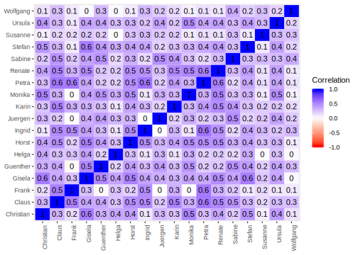

Chapter 10 Deliberative Subjectivities
He who knows only his own side of the case knows little of that. His reasons may be good, and no one may have been able to refute them. But if he is equally unable to refute the reasons on the opposite side, if he does not so much as know what they are, he has no ground for preferring either opinion […]. He must be able to hear them from persons who actually believe them […] he must know them in their most plausible and persuasive form.
-–- John Stuart Mill (1859)
10.1 Administration
“Factor analysis (…) is concerned with a population of n individuals each of whom has been measured in m tests or other instruments. The (…) correlations for these m variables are subjected to (…) factor analysis. But this technique (…) can also be inverted. We may concern ourselves with a population of N different tests (or other items), each of which is measured or scaled relatively, by M individuals.” – Stephenson (1936a: 334)
- “factor analysis with the data table turned sideways”; persons are variables and traits/tests/statements/abilities are the sample or population.
- looks at
10.2 Data Import
All citizens as well as the researcher and the two moderators completed two Q sorts each, one at the beginning and one at the end of the conference.
At its heart, Q methodology involves factor analyses and similar data reduction techniques, procedures that are widely used and available in all general-purpose statistics programs. However, Q methodology also requires some specialized operations, not easily accomplished in general-purpose programs. The transposed correlation matrix, flagging participants and compositing weighted factor scores in particular, are hard or counter-intuitive to do in mainstream software.
Counter to many Q studies, this research features several conditions (before, after), groups of participants (citizens, moderators, researcher), types of items (values, beliefs, preferences) as well as an extended research question, all of which will need to be analyzed systematically. Running and documenting all these variations will be next to impossible without programmatic extensibility of the software used.
10.3 Import
10.4 Participant Feedback
10.5 Missing Data
10.6 Q Method Analysis
Results chapters in quantitative research do not usually recount and justify every mathematical operation from raw data to final interpretation. In reporting mainstream statistics, say, a linear regression (OLM) much in the way of axioms and preconditions is often taken for granted, though perhaps, sometimes too much. Powerful computers, confirmation biases and time pressure for writers and readers alike may conspire to occasionally stretch thin the argumentative link between elementary probability theory and the results drawn from it.
Q methodology is different, and requires a more careful, patient treatment. While its mathematical core — different methods of exploratory factor analysis (EFA) — are well-rehearsed in mainstream quantitative social research, its application to Q is still strange to many.
Transposed Data Matrix.
Because Q method transposes the conventional data matrix, positing people as variables, and items as cases, all of the downstream concepts in data reduction, from covariance to eigenvalues, take on a different, Q-specific meaning, even if the mathematics stay the same. For this reason alone, it will be worth tracking every operation and grounding it in the unfamiliar epistemology of Q.
Marginalization and Controversy.
Almost 80 years after William (???) suggested this inversion of factor analysis in his letter to Nature, Q is still an exotic methodology. It sometimes invites scathing critiques (Kampen and Tamás 2014), but more often, is outright ignored in mainstream outlets. As the dynamics of marginalization go, the community of Q researchers, may, on occasion, have turned insular — though not into the “Church of Q” Tamás and Kampen (2015) fear. Q methodology may have sometimes shied away from exposing itself from rigorous criticism and disruptive trends in mainstream social research, though probably often out of sheer frustration with persistent misunderstandings, and because of genuine disagreement. In epistemological squabbles, too, crazy people151 sometimes have real enemies — or opponents, at any rate.
Happily, within Q, too, considerable disagreement remains (for example, on the appropriate factor extraction technique), though legacy procedures and programs sometimes hamper intellectual progress. Unfortunately, misunderstanding and marginalization is sometimes compounded by a lack of deep statistical understanding, though rarely digressing into glib ignorance of “technicalities” or outright mistakes (“varimax rotation maximizes variation”, in the otherwise fine textbook introduction by Watts and Stenner (2012)). What may easily appear as articles of faith (“thou shalt not use automatic rotation”), are in fact thoroughly argued reservations, based on a deep mathematical and epistemological understanding, as evidenced in both the works of William Stephenson and Stephen Brown, though at least some of this orthodoxy now appears obsolete. These norms become hermetically sealed ideologies (“reliability does not apply to subjectivity”) only when detached from their epistemological underpinnings, as, I suspect, would be the case for other methodologies.
Experimental Design
Literate Statistics.
Not just when, or if, a method is new or controversial, as in Q, mathematical operations and argumentative prose should not be let to diverge too widely. The intuition of literate programming holds for statistics, too: we do not use unintelligible algebra to give us a comprehensible result to be explained. Neither mathematics nor prose are primary, algebra and language are both the explaining intellect at work, just in a different registrar.
I suggest then, that at least in the following, initial analysis, some verbosity has its virtue. Readers will be relieved to learn that I intend not to reproduce the entire mathematical apparatus of Q: Steven Brown has accomplished that, and much more in his authoritative, insight-laced “Political Subjectivity” to which my own work is deeply indebted. Mathematics have their place, but formulae alone, in spite of their veneer of rigor, need analogy, intuition and impression to cover the distance to the deliberative subjectities on taxation and the economy under study here — which themselves are not mathematized in this dissertation, nor much convincingly in the broader field, and maybe never will. One may add, that if science is also bound to a discourse ethic of reaching understanding, it too needs to relate its abstractions to the human lifeworld, from which all meaning eminates.
At the same time, some of the details of this chapter may raise the ire of some established Q methodologists who never tire of stressing the substantive analysis over statistical sophistication. They are right: the key to understanding human subjectivity lies in iterative abduction, in the thorough going back and forth between informed hunches about what might make sense, and what the data will bear out.
The following statistical groundwork is a worthwhile, but merely necessary — not sufficient — condition to a scientific study of subjectivity (emphasis added, though intended by the ISSSS).
The following pages will hopefully dissuade the Q skeptics, and take along newcomers to the method.
To make sense — as we must — of the shared viewpoints on taxation and the economy among the participants of the first CiviCon Citizen Conference, we must first be sure what they are, and if they are, in fact, shared.
10.7 (No) Descriptives
It is common to reproduce descriptive statistics before turning to more advanced analyses.
Common summary statistics often include measures of central tendency (mean, median) and dispersion (standard deviation, range) on variables across cases.
As mentioned before, in Q methodology, variables are people, and cases are items.
The mean rank alloted by Q sorters (as the variables) across all items (as the cases), \(\overline{x} = \frac{\sum{x}}{N}\), is then, unsurprisingly, 0 for all 18 participants.
The average position of items has to be zero, because the forced distribution was symmetrical: since participants placed an equal number of cards at -1 / 1, -2 / 2 and so on, item ranks will always cancel out.
The most frequent median value, also by definition, will be 0 for everyone, because the center value allowed the greatest number of (11) cards per the forced distribution.
By the same token, the range extends from -7 to 7 for everyone, because those extreme values are defined by the forced distribution.
The standard deviation, too, is the same for everyone.
\(s_N = \sqrt{\frac{1}{N} \sum_{i=1}^N (x_i - \overline{x})^2}\), gives the square root of the average squared differences of item scores for a participant, 2.79 for everyone, because the “spread” of items across the mean is defined by the forced distribution.
Conventional R type descriptives are, then, quite meaningless (Nahinsky 1965 as cited in Brown 1980, 265), because they are the same for all participants and are defined ex-ante by the forced distribution.152
In search for descriptives, one may be tempted then to revert back to the R way of looking at data, and to treat Q-sorted items as variables, and Q-sorting people as cases.
One may ask, for example, which items were, on average of all participants, rated
the highest (all-people-own-earth at 2.67),
the lowest (poll-tax at -4.11),
which items were dispersed the most (pro-socialism at 3.68),
the least (tax-outmoded at 1.28),
or — most offending to Q methodologists, as well as spurious —, which items were correlated
the most positively (poor-central-planner, markets-pragmatism at 0.79),
the most negatively (no-tax-corporations, corporate-income-tax at -0.88),
and the least (pigouvian-tax, sic-parity at 0).
This kind of exploration is fascinating, and it invites seemingly inductive hypotheses:
Do people respond most strongly to poll-tax and simple-tax, because these — and other, supposedly similar items — are easy to comprehend and relate to?
Do people respond quite differently to pro-socialism, and quite similarly to land-value-tax-resource, because the former obviously aligns with political identities, while the latter does not?
Do people feel similarly about exchange-value and natural-market-order because of a pervasive anti-market bias,
and very dissimilar about a wealth-tax and a corporate-income-tax, because they fall for a flypaper-theory of tax incidence?
While these survey-type approaches to the data are intriguing, they are inadequate for the data gathered here. It may appear arbitrary to categorically rule out a range of broadly-applicable techniques, let alone summary statistics on the grounds that the data were gathered for a different purpose. For example, Likert-scaled data collected for a (R-type) factor analysis may, if conditions apply, be subjected to a regression analysis. Q, however, is not just another statistical operation, it is a methodology, and while the gathered data bear a superficial resemblance to R methodological research, “[t]here never was a single matrix of scores to which both R and Q apply” (Stephenson 1935: 15, emphasis in original). This postulated incomparability applies to this study, too, and plays out in several ways:
Generalizeability & Small N Design.
In R, the participants are usually a sample of cases from a broader population, and the generalizeability of the results hinges on the quality of this ideally large, random selection. In Q, participants are the variables, on which supposedly shared, subjective viewpoints are measured. Sampling theory does not apply to Q, just as one would not ask random questions in a survey (or so one hopes). Instead, Q method requires researchers to broadly maximize the diversity of participants to capture all existing viewpoints. Generalizeability in Q, if applicable at all, concerns the representativeness of the sampled items of a “population” of statements, though no straightforward sampling theory applies to this concourse either, as it is both infinite and non-discrete. The P-set of this study, the participants in the CiviCon Citizen Conference, are self-selected and probably not representative of the broader population, though recruitment was inclusive and diverse. This flagrantly non-random sampling alone, however, may not yet rule out generalizeability to a broader population of citizens willing to participate in deliberation. As I argue elsewhere, both self-selection and diversity of point of views are crucial for meaningful, concept-valid deliberation, and such non-random sampling may therefore be required for even R-methodological research into the effects of deliberation. Given the haphazard recruitment and great demands placed on citizens, the group of CiviCon participants must probably be considered excessively non-random even by the more charitable standards of deliberation, but an even greater problem lies in the small number of participants. A “sample” of \(N=18\) people (including 2 moderating “confederates”) simply does not admit of generalizations toward a broader population, even of would-be deliberators. R statistics, even the cursory summary statistics in the above, implicitly rely on this kind of generalizeability: If we concede that, say, the low average score of
poll-taxat -4.11 is, to a large extent an artifact of the people who happened to show up at a locally-advertised, five-day sleepover conference for EUR 50 compensation, it becomes dubious why we should care about this factoid at all — other than to characterize the bias of the group.153 Given limited funds, and little experience the CiviCon Citizen Conference was designed for a small group of people, and this constraint was — admittedly — operational in the choice of Q methodology.The small number of participants (even by Q standards) restricts the following Q analysis, too, but in a different, provisionally acceptable way. Recall that in Q, people serve as variables. 18 variables will still be considered quite crude to extract several latent concepts. Consider, for example, the data reduction in Inglehart’s and Welzel’s human development theory: to arrive at two latent value concepts, they condense 35 variables (2005). The issue here, however, is one of resolution, not generalizeability. With relatively few people-variables, Q method will be able to extract only a few, blurred shared viewpoints. But the exercise is not moot: given a decent Q-sample of items, potential additional participants are exceedingly unlikely to render the factors extracted here null and void — that scenario is later rejected as a Null-Hypothesis of sorts. By contrast, adding more people to this study may very well render the high average position of, say,
all-people-own-earthat 2.67 a product of randomness or bias (a high standard deviation of 3.56 would appear to bear this out).The now familiar analogy of LEGO bricks serves to illustrate this difference in concepts of generalizeability once more. Tasking, say, 15 people to build something out of a given set of LEGO bricks may seem reasonable to get a preliminary idea of the kinds of objects (cars, houses) that people build — though we will probably miss out on some rarer constellations (spaceships?) and nuances of existing patterns (convertibles?). Adding more people may increase the resolution to tease out these details, but it’s unlikely that something as basic as “car-like”, or “house-like” will completely disappear. By contrast, again, it seems much less reasonable to take the ratings of individual LEGO bricks by these 15 people as anything but random flukes: there are bound to be some people who like red bricks, more so if the study listing displayed red bricks.
Holism & Non-Independence.
R methodological opinion research often proceeds by analysis, then synthesis; a construct is first dissected into its constituent parts (say, items), then reassembled into some composite (say, a scale or an index).
Truth, in principle, flows from inter-individual differences on the smallest measurable unit of meaning.
Inglehart's and Welzel's work with the World Values Survey, again, serves to illustrate [-@InglehartWelzel-2005-aa].
Items are constructed with some view to a broader construct (say, civicness), and then narrowed down to number of smaller concepts and items.
The reconstruction of latent concepts happens through a very deliberate, almost literate *synthesis*: you take $x$ units of item $A$, $y$ units of item $B$, standardize the result, and out comes a theory of human development to be subjected to confirmatory factor analysis.
<!-- FIXME really need to go back to the source and figure this out. This is probably BS -->
Here, too, the latent constructs (say, traditional vs secular-rational values), are of greater interest than any individual item, but the relationship is merely *additive*, or *triangulatory*, at best: you synthesize several variables to cancel out bias, and to get at a common concept that might unite them all, but these bigger pictures can never be more than the sum of their parts, let alone *different*.
<!-- TODO also add some Brown quotes to all of this -->
Q, by contrast, has a *holistic* outlook on human subjectivity.
What matters are not the individual items, but there overall constellation, that is, how (groups of) participants value these items *relative* to one another.
Summarizes Brown:
> In moving from R to Q, a fundamental transformation takes place:
> In R, one is normally dealing with objectively scorable traits which take meaning from the postulation of individual differences between persons, e.g. that individual $a$ has more of trait $A$ than does individual $b$;
> in Q, one is dealing fundamentally with the individual's subjectivity which takes meaning in terms of the proposition that person $a$ values trait $A$ more than $B$.
>
> [@Brown1980: 19]
These epistemological differences have practical research implications.
In R, items are supposed to narrowly measure *one* concept and should not invite *multiple* interpretations.
A typical item from the World Values Survey, `How would you feel about your daughter(son) moving in with a person from a different ethnicity?` was crafted to elicit a predefined, unambiguous scenario in the minds of respondents.
<!-- TODO find example for/against double-barelled items in Q -->
In Q, an item as open-ended as `labor-no-commodity` (`Labor is not a commodity.`) is suitable *because* it invites a variety of different interpretations on what labor or a commodity are.
<!-- TODO need to add more here - there are limits to Q openennes of interpretation too; refer back to the section on item discussions -->
R survey design, and drafting (or collecting) Q statements may both be more craft than science, but they are a very different crafts that limit what can, and cannot be done with results.
Given the confidence we place in the common understanding of an R-type item, it is reasonable to present summary statistics on this *individual* item.
Conversely, given the openness to interpretation in Q, single item summaries make little sense, precisely because they were chosen to mean very different things to different people.
<!-- TODO notice that Q items are not always crafted as in this case; that makes the difference maybe even starker -->
In R, items are (mostly) measured *independently* from one another, that is, the choice of a participant on one item should not influence or restrict her choice on another item.
This independence is not only a requirement for some of the statistical procedures frequently used, it also follows from the analytic-synthetic epistemology:
if the synthesizing operation is subject to hypothesis-testing, any relationships between individual items produced by the data gathering method would be considered an undesirable artifact.
<!-- TODO find statistical concept for non-independence-->
*Rating*, rather than *ranking* measurements are therefore the norm, and some survey research goes as far as randomizing the questionnaire to avoid ordering effects.
<!-- TODO find source for randomized order -->
In Q, by contrast, items are evaluated *only* relative to one another and participants are reminded that the absolute scores assigned (-7, 7 in this case) merely imply *ordinal* (better *than*), not *cardinal* valuation.
<!-- TODO notice that at least I stressed that; also relate to later discussion -->
Relative item rating in Q has a technical reason, too:
Only because all items are evaluated relative to all other items, all item scores come in the *same* unit (valuation relative to the remaining items), a transposed correlation matrix becomes possible (a statistical summary, of, say, height and weight would be nonsensical).
<!-- TODO is this analogy exactly right? Have I really gotten this? -->
But strictly relative valuation has an epistemological dimension, too: if meaning can be derived from the *entire* item constellation only, participants must always choose *between* items.
*Rating* and *ranking* measurements, taken to these extremes, are not interchangeable and strictly limit the meaningful presentation of results.
An item from the World Values Survey can be summarized in isolation, because it was measured independently:
the agreement with, say, a son-in-law from a different ethnicity by any one participant does not preclude her equal agreement with another item.
An item from a Q study as this cannot be summarized in isolation, because it was measured in a dependent way: a participant ranking, for example, `labor-no-commodity` at the top, will be precluded from ranking any other item in the same way.
By extension, it also makes little sense to present a mean valuation of `labor-no-commodity` (0.61) in isolation because, in absence of the means of *all other items*, we have no idea what that value *means* (it might mean very different things, for example, if all other items were supremely agreeable).
The analogy of LEGO bricks only slightly overstates the absurdity of ignoring the holism aspired to by, and non-independence implied by Q.
Recall that participants were instructed to assemble a given set of bricks into an object of their design.
It would clearly be nonsensical to take the low *absolute* (x-axis) position of, for example, a small red brick as an indication of disliking, without relating its position to the overall design: depending on the position of other bricks, it might be part of an exposed car fender, or a hidden structure in a house basement.
It would be similarly perplexing to harp on the higher average (x-axis) position of ramp-shaped bricks, compared to the cuboid-shaped bricks:
*of course*, if you are putting roof tiles on top, you *have* to place the foundation walls of a house underneath it.- Validity & Research Ethics.
Finally, Q and R differ in their conceptions of validity.
In R, a measurement of inference is valid, if and to the extent that the stated concepts correspond to some objective reality "out there".
For example, the above-mentioned WVS item on `your daughter marrying someone from a different ethny` rests on the assumption that there is such a thing as an attitude on inter-ethnic relationships (which seems reasonable).
<!-- FIXME again, fix the WVS reference, or kill it -->
No matter how supposedly *inductive* --- probably just *exploratory* --- an R approach to data is, the terms of that data are always set *before the fact*, *by the researcher*.
Notice that the WVS item on inter-ethnic relationships will *not* admit of an attitude unforeseen by the researchers, say, a discriminatory sentiment based on *language*.
In Q, conventional definitions of validity do not easily apply, at least because there is, by definition, no external and objective standard to verify human subjectivity.
<!-- TODO point to respective section where I discuss that -->
Instead, one *posits* that viewpoints become *operant* through the act of sorting Q-cards, and that even a limited sample of diverse items will give people a roughly adequate material to impress their subjectivity on.
<!-- Notice Browns language on this in the email on coefficients: it's a logic -of -science kind of axiom; we model things as if - we also model them on the forced distribution, might add this here -->
Items may --- or may not --- have been crafted and sampled with some theoretical preconception in mind (for example, libertarianism for `deontological-katallaxy`), but that preconception should not, in principle, limit the meaning that participants ascribe to it.
Dramatically *different* interpretations of the same item, are emphatically *not* a threat to validity in Q.
It is easy to see how the above, cursory summary statistics shift the standard of validity, and invite what Brown calls "hypotheticodeductive" inferences [-@Brown1980: 121].
To nod at the high positive correlation of `exchange-value` and `natural-market-order` across participants is to reify a concept of "market radicalism" (or something similar), from which these items probably sprung *in the mind of the researcher*.
*"Ah, that makes sense"*, one thinks --- and by sense, meaning the sense of the researcher and (maybe similar) sense of the reader.
Looking at any particular item or relationships between items across people, always risks implying that the *meaning* of any given item is the same for everyone, as per the researcher's specification.
It is also easy --- and self-serving for Q --- to overstate the difference to a hypotheticodeductive paradigm.
Falling short of accepting a debilitating, radical constructivism, researchers --- as all people --- will always have to rely on some *common* understanding of language, including Q researchers.
Researchers cannot interpret shared viewpoints of common sorting patterns (the factor scores) without *some* reference to their own preconceptions in drafting or sampling items.
No factor interpretation of holistic patterns of items can be undertaken without *some* reference to their own preconceptions about those items.
It would be impossible to interpret even the relative position of `exchange-value`, rejecting any overlap or relationship to our academic understanding of that item:
we would be looking at a heap of structured gibberish.
Q researchers are, in fact, quite fond of their own judgment: "researchers might, on occasion, 'know what to look for'" [Stephenson 1953: 44, as cited in @Watts2012: K2308].
The epistemology of *abduction* suggests to repeatedly go back and forth between hunches, interpretation and what the data will bear out.
<!-- TODO that's weak; fix and refer to abduction section -->
The point of validity in Q methodology is not to ban all researcher's preconceptions, but to both *relax* their grip on meaning, and to *constrain* the plausibility of their explanations.
On the one hand, the meaning of items is *relaxed*, because the linear relationship to the researcher's hypotheticodeductions is no longer presupposed:
`pro-socialism`, may, or may not have been interpreted as the researcher intended.
On the other hand, the plausibility of any explanation is *constrained*, because any observed shared viewpoint must make *sense*, per *some* set of interpretations of its items.
These epistemological "Goldilocks" conditions disappear when R statistics are applied to these data:
when presented the isolated finding of the high negative correlation between `wealth-tax` and `corporate-income-tax` (-0.88), we can *only* refer back to some of the preconceptions on "misunderstanding taxation" presented earlier (Flypaper Theory).
<!-- TODO add reference to other section, mcccaffery -->
This may be a productive approach --- though probably not best undertaken with these items and data gathering --- but thereby "testing" people's understanding of tax emphatically is not a valid measurement of their subjectivity, and falls short of the deliberative conception of public choice espoused earlier.
<!-- TODO that's not quite right. Also, reference other section -->
These epistemological concerns also carry a research ethical imperative:
The data should be treated as participants were told it *would* be treated.
That adherence to informed consent *includes* the methodology.
<!-- TODO link to informed consent -->
I told the 16 guests at the first CiviCon Citizen Conference that I was interested in their viewpoints on taxation, that their unique perspectives on the economy mattered, and that there *would be no wrong way* to sort the Q-cards.
<!-- TODO link to the condition of instruction -->
For up to three hours, these citizens earnestly struggled with these 77 items "on which reasonable people could disagree", thoroughly weighing thoughts and items against another, graciously pouring their thoughts into the rigid and crude form of a Q-sort.
It would betray the trust and degrade the effort of the participants to treat these data as if they were R:
I could have just handed them a survey and saved them a lot of time.
The ethics get even more damning, when R statistics treat data as tests, and understanding turns to grading, as so easily happens when looking at the extremely negative correlation of `wealth-tax` and `corporate-income-tax`, or similar would-be inconsistencies.
In the morning session of the second day, some participants expressed worry over being "tested" in the Q-sorts, as well as the conference.
The conundrum of measuring people's understanding of taxation, without testing them on some narrowly-preconceived notion of consistency is a familiar one, and it will continue to plague this research.
<!-- TODO add link -->
The least I owe to the CiviCon participants is to make every effort to render their viewpoints understandable *from the inside*.
That cannot be done with R methodology, and implore everyone using this data *not* to try.
LEGO, again, delivers a coda by analogy.
A hypotheticodeductive inference on a persons LEGO building would rely on a preconceived understanding of what any given brick means, for example: "this is a transparent brick".
Any discussion of the (absolute) position of individual items would, absent any other information, have to revert to the preconception of the researcher.
For example, one might argue that the extreme placement (on any axis) of the transparent bricks indicates strong feelings for these types of bricks.
In the context of a LEGO house, of course, the transparent bricks may be considered *windows* by participant builders, and be placed on the exterior of the building because of that function.
More varied meanings of transparent bricks are conceivable.
A subset of builders may place *small* transparent bricks *inside* the houses, not readily explicable by their transparency: why would *anyone* greatly place almost all transparent bricks on the perimeter, but only a very small one inside, the R researcher may wonder?
Given the context, one may recognize the surroundings of the small transparent bricks as "kitchens" and venture that these builders interpreted them as maybe sinks full of water, or aquariums.
Characteristically, the meaning of "transparent brick" is relaxed considerably in the light of context, but it also remains bound to a common understanding of some of its features (transparency), and therefore constrained to the subsets of possible meanings that might make sense of it (aquarium, sink full of water, or other *transparent* objects).
One may add that the participant builders may also be quite offended, if they learned that their LEGO constructions did not receive any attention as such, but where instead intended as a test of visual acuity:
whether participants could distinguish transparent from non-transparent bricks.The point here is not to criticize R methodology, though the near hegemony over quantitative social sciences that Brown rails against (1980: 321), may indeed have long stretched thin its foundations and overreached its purview. The point is that, for the present research question or given the present data, any excursion to R methodology would at best be a distraction, and at worst strictly unscientific.
10.8 Correlations
To extract shared viewpoints, we must first establish what it means or any pair of Q-sorts to be alike. Since we would expect people with similar viewpoints to sort items in similar positions, and therefore have similar values over all items, respectively, we can use a correlation coefficient between any two people’s sorts as a statistical summary of their similarity. A correlation matrix of all such pairs is the simplest summary statistic that can be presented for Q data, maintaining both the holistic and relative nature of the sorts. Though Q studies do not always display or discuss the correlation matrix, all of the downstream analyses are, in fact, based on this table (Brown 1980: 207).
10.8.1 Correlation Coefficients
Depending on assumptions made, different correlation coefficients are applicable to Q data. These coefficients are well-known statistics, but, their underlying assumptions can be thorny for Q methodology and consequential for these data. The proceeding discussion also serves to rehearse the uncommon person-correlations at the heart of Q methodology.
Pearson’s \(\rho\) Product-Moment-Correlation Coefficient.
The conventionally used Pearson product-moment correlation coefficient, or Pearson’s \(\rho\), starts from the covariance of any pair of Q-sorts, in their raw form,
- \[cov(X,Y)=\sum_{i=1}^{N}{\frac{(x_i-\overline{x})(y_i-\overline{y})}{N}}\].154
Since in a forcibly symmetric Q distribution as ours, the mean will always be zero (see above), we can safely ignore the respective \(-\overline{x}\) terms; by default, Q-sorts are already expressed as deviations from their expected values, \(E\). The covariance on all items for, say
IngridandPetra, is therefore simply the cross-product of all item positions divided by the number of items, \(N\). It’s easy to see how this number will be larger when the two scores have similar (absolute) values:Petra’s andIngrid’s quite different ranks for, sayall-people-own-earth(6, 2, respectively) multiply to 12, whereas their more similar positions ondeontological-ethics(7, 5, respectively) yields 35. Brown reminds us that this multiplicative weighting of like extreme scores is “phenomenologically” appropriate, because respondents feel more strongly and are more certain about items ranked towards the margins (1980: 271). The resulting covariance is, unfortunately, hard to interpret, because it is in squared units and depends on the spread of the data. It is normalized into Pearson’s product-moment correlation coefficient by dividing it by the product of the two standard deviations, in this case,Petra’s andIngrid’s — both of which are, by definition, the same.- \[\rho(Petra,Ingrid) = \frac{\operatorname{Cov}(Petra,Ingrid)}{\sigma(Petra)\sigma(Ingrid)}\]
Consider the special case of correlating a person’s Q-sort with her own Q-sort, say
PetrawithPetra, to understand the bounds of the Pearson’s \(\rho\). The denominator in (2) yields the \(\operatorname{Var}(X)\), the square ofPetra’s standard deviation over the item scores is, by definition, her variance. The numerator is given by the summed product ofPetra’s scores withPetra’s scores, which is also the variance. The correlation coefficient of two identical Q-sorts is therefore \(1\). A correlation coefficient of \(-1\) would result if the two Q-sorts were diametrically opposed, as if mirrored around the distribution mean of zero: in that case, the numerator would be \(-\operatorname{Var}-\), and everything else would remain the same. A correlation coefficient of \(0\) would be expected if two Q-sorts are entirely unrelated.All of these extremes are rarely reached in Q, with a range of -0.12, 0.62 in this case.
The Pearson correlation coefficient is a measure of linear association between two variables, or Q-sorts in our case.
Spearman’s \(\rho\) Rank Correlation Coefficient.
Spearman’s \(\rho\) works much like Pearson’s \(\rho\), but starts from rank orders, instead of raw Q-sort values. Raw Q-sorts are rank ordered, and assigned their rank index. Crucially, in a case of ties — of which there are many in Q —, the average of the would-be occupied ranks is assigned as a rank. For example, if two cards are sorted in the \(-5\) column, as per the Q distribution, they will both receive the rank of \(3.5\), because they would occupy the 3rd and 4th position, if they were not tied. A Q-sort, beginning from the left (negative) extreme will look like this if transformed into Spearman’s ranks:
Raw Value Index Spearman’s Rank -7 1 1 -6 2 2 -5 3 3.5 -5 4 3.5 -4 5 6.5 -4 6 6.5 -4 7 6.5 -4 8 6.5 -3 9 12 -3 10 12 -3 11 12 -3 12 12 -3 13 12 -3 14 12 Spearman’s procedure then computes a Pearson’s correlation coefficient (as in the above) from the rank differences \(d_i = x_i - y_i\) (instead of the difference to the mean). This version of Pearson’s coefficient can be summarized thus:
- \[\rho = 1- \frac{6 \sum d^2}{n^3}\]
The resulting coefficient is likewise bounded from \(+1\) to \(-1\), with perfect correlation indicating not a linear association, but a strictly monotone association, where all items are ranked the same, though possibly by different “amounts”. Conversely, two Q-sorts with mutually reversed ranks would yield a \(-1\) coefficient, indicating a negative, monotone relationship.
Kendall’s \(\tau\) Rank Correlation Coefficient
Kendall’s \(\tau\) starts not with differences in scores or ranks, but with a comparison of item pairs between the two Q-sorts. When the ranks of two items (\(j\), \(i\)) agree between two Q-sorts (\(x\), \(y\)), the item pair is said to be concordant (\(x_i > x_j\) and \(y_i > y_j\), or \(x_i < x_j\) and \(y_i < y_j\)). When the ranks between the two respondents disagree (\(x_i > x_j\) and \(y_i < y_j\) or \(x_i < x_j\) and \(y_i > y_j\)), they are said to be discordant. An item pair is said to be tied on a Q-Sort if both items have received the same score (as frequently happens in Q), \(x_i = x_j\). In the simplest form, Kendall’s \(\tau_A\) divides the difference between the number of concordant pairs \(n_c\) and the number of discordant pairs \(n_d\) by half the number of pairs squared: \(\tau_A = \frac{n_c - n_d}{n(n-1)/2}\). For example,
PetraandIngridare concordant onpoll-tax(-3, -4, respectively) andcorporate-income-tax(q_sorts["corporate-income-tax",c("Petra","Ingrid"),"before"], respectively): they both prefercorporate-income-taxoverpoll-tax, if by a different amount. They are discordent oninfinite-growth(0, -3, respectively) anduse-value(-1, 0, respectively): Between the two,Petraprefersinfinite-growth,Ingridprefersuse-value.Because the denominator gives the total number of combinations of two items out of the total number of items (in this case 2926), Kendall’s \(\tau\), too, is bounded from \(+1\) to \(-1\). If two Q-sorts are identical (opposed), they will (dis)agree on all pairwise item comparisons, divided by all possible such combinations, yielding (\(-\))\(1\). If two Q-sorts agreed and disagreed on half of the comparisons each, the numerator will be \(0\), yielding a \(0\) coefficient.
Because in Q-sorts items must be stacked in some columns, there are many ties. Kendall’s \(\tau_B\) additional terms in the denominator adjust for such ties, considering the number of ties \(n_1\) and \(n_2\) on both Q-sorts:
- \[\tau_B = \frac{n_c - n_d}{\sqrt{(n_0-n_1)(n_0-n_2)}}\].
Kendall’s \(\tau\), does not give an association between the two Q-sorts, but expresses the probability, that any given pair of items will be ranked equally between the two Q-sorts.
On a technical level, however, all of the code used to calculate correlations reported here us the sample statistic. Because because the de-biased \(N-1\) term occurs both in the numerator and denominator of the correlation coefficient, it cancels out.
The choice among these correlation coefficients depends first on the kind of data gathered upstream, and the kind of analysis intended downstream.
Pearson’s \(\rho\) requires at least interval-scaled data: the difference between values must have cardinal, not just ordinal meaning. ^[Aside from these considerations, Pearson’s \(\rho\) is susceptible to outliers (not robust) and requires normally distributed data, though both are not a great concern in Q methodology, when forced distributions bound extreme values and close to a bell curve (as the current distribution is). For example, cardinal valuation would imply cards sorted under \(3\) are preferred to cards sorted \(2\) by the same amount as cards between \(7\) and \(6\) respectively — not just that higher sorted cards are valued more.
Both Spearman’s \(\rho\) and Kendall’s \(\tau\) relax this assumption, and can be used on ordinally-scaled data, with item scores merely rank, but not a rating.
10.8.1.1 Ordinal vs Interval Data
Q method is, unfortunately, a bit muddled on the issue of cardinal or ordinal valuation in Q-sorts. Most studies simply use the default Pearson coefficient and many articles as well as the leading introductory textbook on the method (Watts and Stenner 2012) do not even mention, let alone justify, the use of one of the three common coefficients. This oversight might be easily forgiven, because for Q data, at least Spearman’s and Pearson’s coefficients appear to be closely related. Given the relatively high number of ranks assigned (usually more than 9, 15 in this case), many researchers might have no trouble treating the data as interval-scaled, much as (shorter-ranged) Likert-scales are often interpreted. Additionally, Q data is tightly bounded, especially when a forced distribution is used: there can be no outliers, that might inordinately affect Pearson’s, but not Spearman’s. One might then conclude, as Block (1961: 78) and Brown (1971: 284) that the choice of correlation coefficient does not much matter, effectively sidestepping the fundamental question of which coefficient is the appropriate one. Brown argues correctly that absent ties, Spearman’s and Pearson’s must be identical, and that illustrate with his data, that even with ties, Spearman’s and Pearson’s “produce virtually identical results […]”, which are “in turn […] essentially the same as those obtained utilizing Kendall’s \(\rho\)” (1980: 279). The problem is that, in fact, Q data has many ties, and using this data, the coefficients do differ by an average of 0.03, ranging up to a sizable 0.19 for Spearman’s and Kendall’s, each compared to Pearson’s. As the sensitivity analysis in the appendix shows, these differences in correlations can also filter down to the factor analysis, and may even bias the interpretation in a systematic way.
Aside from Brown’s here falsified empirical claim that “within the factor-analytic framework […] the interval-ordinal distinction is of no importance” (1980: 289), there appears to be no methodological literature to justify a choice of coefficients on Q-epistemological or ontological grounds.
The choice between interval and ordinal valuations in Q-sorts seems to turn on the status of the Q distribution.
On the one hand, we can seek to ascribe positive status to the Q distribution, that is, assume that there is such a thing as a true distribution on any given set of items for any given respondent, and that this distribution can be measured. The simplest way to go about this may be to let people sort items freely into a fixed number of bins. Given the relatively great number of bins (15 in this case), it seems reasonable to treat distances between adjacent bins as meaningful, because respondents were able to freely project their subjectivity, however formed. Alternatively, one can assume that any respondent’s feelings towards any set of items are normally distributed as a matter of ex-ante empirical finding. Assuming that every person has one \(-7\) item, two \(-6\) items, and so forth under the bell curve, it is reasonable to assume same and meaningful distances between equal bins slicing up the (continuous!) normal distribution. This latter assumption is, of course, quite heroic, especially considering that P-sets of items cannot be random sampled and any given set of items will likely include idiosyncracies. I am not aware that anyone in the Q literature would make, nor provide evidence for this latter assumption, though few researchers have implemented free distributions.
On the other hand, we can ascribe epistemological status to the Q distribution, that is, treat it “as a formal model in the logic-of-science sense and in terms of which persons are instructed to present their points of views”, in Brown’s characteristically cogent words (2015, via email on Qlistserv). Oddly — though not unconvincingly — this is then an operational definition of the distribution to operantly measure the structure of subjective viewpoints (Stephenson 1968: 501), to borrow a popular dichotomony in Q circles. The quasi-normal Q distribution is defined by the researcher as the terms in which respondents may express the concept of subjectivity, much as R researchers define items based on some pre-existing concept. This latter view of the distribution underpins most of Q research, though not always as explicitly as in Brown’s writing. The case for the forced-distribution-as-model is twofold. First, the forced distribution strongly single-centers all the items, a pre-condition for a transposed factor analysis: under a forced curve, all items are always ranked relative to the same reference point of all other items.155 Second, the forced distribution extracts “hidden” preferences by making Q sorters make the same, tightly circumscribed decisions: for example, people cannot place more than one item in the leftmost bin. A complete rank ordering might be the logical — if impractical — solution to reveal all hidden preferences: in a complete rank order, no ambiguities are left.
The former positive view on the Q distribution might straightforwardly justify cardinal valuation of Q-sorts.
Stephen Brown argues that cardinal valuation can be maintained for the latter, epistemological view on the Q distribution, too, or at least that “the equality of intervals along the Q-sort range […] is no more subject to proof than it is to disproof, which is common to models.” (Brown 2015, email to Qlistserv) It seems to me though, that the model implied here conceives of Q-sorts as ordinal valuations, and that data should be treated respectively. To operationally “reveal the Q sorters’ preference (as opposed to their likes)” by forcing people to decide between items is to negate meaningful distances (ibid.). Stephen Brown may be correct that “preferences” and “likes” cannot be observed at the same time, akin to the quantum principle of complementarity (Brown’s analogy). However, this same complementarity holds between ordinal and cardinal valuations. If preferences are to be revealed in terms of choices constrained by the measuring mechanism, then that is an ordinal measurement, without meaningful distances. Meaningful distances require that respondents be arbitrarily free in their choices, including, for example, all items in one column, with no distinctions enforced.
An ordinal interpretation of data also dovetails with the related, relentness instructions to respondents that they worry only about the relative positioning of items.
Readers may wonder, at this point, what could possibly warrant this methodological diversion in the context of the Keyneson data analysis.
Problematically, the correlation matrix for Keyneson looks not just different, depending on the chosen coefficient, but in a systematic way.
This bias stems from the different weighting of similarly (and dissimilarly) sorted items in the extremes of the distribution. Recall that Pearson’s \(\rho\) squares the covariance, giving great weight to whatever similarity people’s viewpoints express in their tails. By comparison, Spearman’s \(\rho\) offsets this quadratic weighting partly by “spreading out” the center of the distribution: for example, in Spearman’s ranks, the difference between the (raw, Pearson’s) \(0\) and the \(1\) column is \(10.5\), whereas the difference between the \(6\) and the \(7\) columns is only \(1\). As an illustration, Spearman’s \(\rho\) assumes that respondents ordered the items side to side, with equal signs pasted where they were indifferent (tied), instead of on top of one another in equal-width bins. Because the number of ties in the center is, by virtue of the forced distribution, greater than the number of ties towards the extremes, differences in valuation towards the center occupy a greater range. For example, two equally ranked items at (\(+7\)) and (\(+1\)), will contribute 1444 and 110.25, respectively, at a ratio of and two equally ranked items at a ratio of 13.1 to 1 in Spearman’s ranks, but 49 and 1 at a ratio of 49 to 1. In short: similarities and differences between Q-sorts towards their middle get greater thrift with Spearman’s \(\rho\) compared to Pearson’s. Brown, as previously noted, suggests that the quadratic weighting of differences and similarities towards the extremes is warranted because respondents feel strongest about these items. That may be so, but it implies an otherwise rejected positive assumption on the Q distribution, namely, that all respondents do feel much stronger about items placed in the extremes, and by the same amount.
Absent such a positive assumption, the inordinate influence of covariance in the extremes can conspire to introduce bias as a function of the given Q-set.
Consider that items may — especially when they are not gathered “in the wild”, but crafted, as for Keyneson — differ in the starkness of their wording.
For example, pro-socialism might have been formulated without reference to the informative, but tainted term “planned economy”.156
Consider also that some (and only one) item has to fill the extreme position, irrespective of whether a participant really feels that much stronger about the last item.
It may then be that starkly worded items tend to occupy these extreme positions, greatly load the correlation matrix and downstream factor analysis.
In the extreme case, the inclusion (or exclusion) of a divisive item such as pro-socialism (greatest standard deviation at 3.79) may produce so much covariance as to become something of an “anchor item” for a factor.
The issue here is not that some items “anchor” a factor more than others (that is very much the point of distinguishing statements), nor that some items are worded in a different style (that is very much the point of the factor interpretation). The issue is that absent a positive view on the Q distribution — which we have rejected — the divisiveness of some items may crowd out other, “milder” patterns of covariance towards the middle of the distribution, even trivialize factors in an extreme scenario, all for no good reason. Recall that without a positive distributive assumption, we have no reason to assume that the difference between, say \(6\) and \(7\) is the same as between \(0\) and \(1\). We cannot consequently know in any absolute amount how much more or less strongly people felt about more or less divisive items: the weighting of the (mildly worded) middle covariances to the (starkly worded) extreme covariances is, becomes arbitrary.
Q methodology with a forced distribution has thrust us into a no-mans-land between interval and ordinal data, inhospitable to sound statistics. If we assume interval scaling, and use Pearson’s \(\rho\), covariances in the extremes are weighted more, though the magnitude of that weighting is suspect, for the above-mentioned reasons. If we assume ordinal scaling, and use Spearman’s \(\rho\), covariances in the extremes are weighted less, though the magnitude of that weighting is suspect, too. Recall that the “spreading out” occurs as a function of ties within the higher columns towards the middle of the distribution. These ties, however, are also enforced by the method, and did not arise organically.
Ideally, Q method would produce a thoroughly grounded clarification of how covariances across the (forced) distributions should be appropriately weighted. Unfortunately, at least the outspoken members of the Q listserv appear untroubled by this supposed conundrum. Bob Braswell (2015, email on Qlist) suggests that because the downstream analyses require Pearson’s “the burden of proof is on someone who would like to substitute another correlation coefficient”. Braswell and Brown also doubt differences in coefficients will be consequential, and suggest any downstream effects may be counteracted by judgmental flagging and rotation. In a way, these skeptics are right: even a (rejected) uncertainty on the choice of correlation coefficient does not invalidate Q Methodology, and final factors are likely to share a great family resemblance, as also indicated by the robustness analysis in the appendix. Still, this ambiguity on coefficients affects Q methodology at a fundamental level, carrying on through all downstream analyses, and even small differences should matter for an avowedly scientific study of subjectivity. The troublingly common resort to abductive judgment in the face of muddied statistics risks loosening the tight positive bounds placed on researcher’s interpretation ever mover: if, in addition to the rotation method, the flagging, the number of factors and the extraction method, even the correlation coefficient were up for grabs, researchers would enjoy considerable latitude in specifying their models — all before the supposedly bounded qualitative interpretation has begun. These and other methodological challenges are often met by reframing them in terms of (outsider) R and (insider) Q approaches, even where, as in this case, the conundrum is thoroughly grounded in Q, possibly betraying an insular retreat of the method.
Alternatively, Q method could take either ordinal or cardinal valuations in Q sorts to their respective logical conclusions: complete rank orders and non-parametric statistics in the former, freely distributed sorts in the latter. Such innovations would require, among other things, thorough validation, and are clearly beyond the purview of this research.
Among the imperfect — because arbitrary — choices, Spearman’s \(\rho\) appears to be the conservative choice, and for that reason, will be used in the following. Spearman’s stresses the middle of the distribution, an area where respondents feel less strongly, and less clearly about placed items. Any confusion or indifference about these items should result in random placement around the mean, and therefore, cancel out in the correlation coefficient. Overall correlations may be lower (they are not at 111.23 and 107.84, respectively) , or less patterned, and resulting factors are less likely to be superficially anchored by some agreement in the extreme.
10.8.1.2 (Linear) Association vs. Probability
Assuming that the present Q-sort data best be treated as ordinal scaled, the question arises how their correlation coefficients can be appropriately and meaningfully summarized into ideal viewpoints.
Q methodology, ordinarily relying on Pearson’s \(\rho\) has it easy: as measure of linear association it lends itself well to the matrix algebra of factor or principal components analysis.
The case is more complicated for rank order statistics. Fabrigar and Wegener rule out exploratory factor analysis for ordinal data, suggesting (2012: 96). Instead of shoe-horning rank data into factor analysis , Bartholomew, Stew et al. recommend new “model-based methods” (2011: 45). As indicated in the above, taking an ordinal view on Q-sorts to its statistical conclusion might be worthwhile, but the required re-validation and epistemological foundation is untenable here.
Luckily, other statisticians are more optimistic about factor-analyzing ordinal data. Basilevsky recommends “euclidian measures such as Sperman’s (sic!) \(\rho\) […]” over Kendall’s \(\tau\) probability, because the latter obscures local differences and yields no meaningful factor analytic result (1994: 512, emphasis added). Fittingly, Basilevsky explicitly validates a Spearman’s-based principal-components analysis of an “n x n matrix […] among the observers”, though he might not have had Q methodology in mind (1994: 515, emphasis added). He concludes for Spearman’s that “if intrinsic continuity can be assumed either as a working hypothesis or by invoking a priori theoretical reasoning, most factor models carry through just as if the sample had been taken directly from a continuous population” [(1994: 518). That bodes well for this analysis. Intrinsic continuity is customarily assumed for “six or seven categories” (Bartholomew et al. 2011: 245), and should be defensible for 15 categories.
This remains very much an “ad hoc method[]” for treating Q-sort data (Bartholomew et al. 2011: 45, emphasis in original), but it is a conservative one. At best, analyses based on Spearman’s \(\rho\) dovetail with Brown’s operational definition of subjectivity as Q-sorts under a quasi-normal distribution, implementing an appropriate statistic for fine-grained, but ordinal data. At worst, Spearman’s-based analyses fall short off the ordinal scaling of Q-sorts, and merely effect a monotone transformation of would-be cardinal data, emphasizing covariances towards the center of the distribution.
10.8.2 Correlation Matrix
The simplest summary statistic in lieu of descriptives we are left with is the correlation matrix.
Qmethod — as other Q software, does not report the correlation matrix, but the below correlation matrix is produced calling the same function also used in later analyses, a Spearman’s \(\rho\) correlation coefficient.
The correlation matrix is characteristically complex, and hard to interpret — which is probably why most Q studies, especially with more participants, do not report it.

Recall, again, that the correlations in the above matrix are between people-variables across item-cases. The below plot illustrates this for the strongest positive, the strongest negative, the weakest and a self-correlation.
To protect the anonymity of participants, as discussed elsewhere, I cannot provide additional details to contextualize individually high or low correlations between Q sorters. Suffice it to say that the correlations broadly track views expressed at the conference, and, to a lesser extent, age and education.
Still, some general observations are in order.
Correlations do not go especially high, with a maximum of 0.6, though merely rough similarities may be expected with a diverse and complicated Q-set as keyneson.
Recall that some participants reported problems sorting several items: the resulting (random) error might prevent greater correlations (greater overall, and more bifurcated correlations after the conference appear to bear this out.)
More remarkable is the fact that while there are several correlations close to 0 — quite rare in Q —, there are no substantial negative correlations.
Recall that the Q-set was designed for “reasonable people to disagree on”, so why did respondents not disagree more?
One the hand, the absence of negative correlations might indicate that people do not think in strictly opposite ways about taxation — or the keyneson items, at any rate.
Instead, people might think differently about it, expressing uncorrelated sorts.
The greatest difference in expressed subjectivity among the participants lies not between diametrically opposed patterns, but between different patterns.
On the other hand, the predominantly positive correlations might betray a lack of diversity, or presence of skew among the P set of participants already suspected from the conference report.
For example, in a broadly social-democratic crowd, with some socialists and conservatives sprinkled in, but no libertarian, disagreement is unlikely to be diametrical.
Neither a socialist, nor a conservative take the precisely the opposite viewpoint of a social democrat, though they may differ considerably.
While this lack of diversity may spell trouble for the quality of the sample, it is good news for the factor analysis. Without negative correlations, it is unlikely that people will load on opposite ends of “polar factors” — a great hassle for computing composite scores.
10.9 Factor Extraction
Based on the above correlation matrix showing the pairwise similarities of all participants, Q methodology proceeds by summarizing these patterns into fewer, shared viewpoints.
By way of LEGO analogy, the correlation matrix superimposes any two buildings on top of another, displaying the degree of overlap between them. To extract the kinds of objects that our participant builders have constructed, we must somehow further summarize this matrix to yield a shorter list of family resemblances among the LEGO objects.
Q methodology, in other words, rests on an exploratory data reduction technique.
10.9.1 Which Data Reduction Technique
Just which of a number of such data reduction techniques would be a appropriate for Q methodology is, alas, again equally disputed and consequential.
The Q literature, unfortunately, offers no definitive resolution, but instead loosely refers to epistemological (metaphysical?) axioms (“indeterminacy”) or invokes tradition (Stephenson, and increasingly, Brown) and past computational limitations (e.g. Stephenson (1935): 18]).
Criticism of such Q orthodoxy is rising on the Qlistserv and elsewhere, most notably (and convincingly) by decade-long contributor (and PQMethod maintainer) Peter Schmolck as well as recently Akhtar-Danesh (2007), but no work has been published yet.
Butler’s critique, originally directed at factor analysis in general, oddly, still seems to apply to Q:
“far too many […] students complain that the only basis they have for choosing among the many types of factor analysis is the prestige of a given theorist or the fact that this or that”maximin" solution has often been used" (Butler 1969: 252f), also see updated critique in (Yates 1987: 6)
Absent well-justified choice in the literature, we then have to delve into the alternative methods and decide for this study on their merits.
Readers will be relieved that the purview of this investigation can be pragmatically limited to only three different extraction methods for exploratory factor analysis (EFA):
- Principal Components Analysis (PCA), sometimes also known as the Hoteling method
- Centroid Factor Analysis (CFA), also known as the Simple Summation Method
- Principal Axis Factoring (PAF), also known as Common Factor Analysis
There are many other multivariate techniques that may — or may not — hold promise for Q methodology, including cluster analysis (CA), multi-dimensional scaling (MDS), latent profile analysis (LPA) or structural equation modeling (SEM), as well as yet different non-parametric methods (latent trait and latent class analysis) (Yates 1987: 2), as may be required by a stringently ordinal reading of Q sorts (see above). Such a systematic reconstruction of Q methodology in light of currently available techniques may be worthwhile — or not —, but it is clearly beyond the scope of this study. Of course, just because alternative methods may be difficult and untested does not mean that the above conventional techniques are adequate. Limiting the discussion to the above techniques is still prudent, not only because they have been tested in Q studies, but also because they (especially PCA) are relatively simple mathematical operations with limited assumptions that can be readily defended.
Readers will also be relieved that only the chosen procedure will be presented in some mathematical detail; the choice among PCA, CFA and PAF can be well-justified on a verbal level.
The choice boils down to two features of the three methods: a supposed indeterminacy and a possibly implied latent variable model.
| Indeterminate | Determinate | |
|---|---|---|
| Latent Variable Model | Centroid Factor Analysis (CFA) | Principal Axis Factoring (PAF) |
| Linear Composition | Principal Components Analysis (PCA) |
10.9.1.1 Latent Variable Model or Linear Composition
Centroid Factor Analysis (CFA) and Principal Axis Factoring (PAF) are both latent variable models. They estimate a smaller set of latent variables (here: Q factors) from a larger set of manifest variables (here: individual Q sorts). By the same token, these techniques allow for error: any particular manifest respondent’s Q sort would be explained by her loadings on a set of latent factors, plus some residual error term, accounting for the particularities of that person’s Q-sort. As such, CFA and PAF summarize only the common variance among the sorts, but not the specific variance.
By contrast, Principal Components Analysis (PCA) considers all of the available variance, common and unique. There is no concept of measurable manifest and underlying latent variables in PCA: as will be described later, the principal components are merely a compressed “vector recipe” to re-expand to the original correlation matrix.
This difference between CFA and PFA on the hand and PCA on the other also reflects in the correlation matrix passed on to the data reduction technique. Recall that the diagonal in a correlation matrix are all ones; by definition, a Q sort is perfectly correlated with itself. PCA takes this original correlation matrix as the starting point, with all ones in the diagonal. If expanded again, the summary produced by (a complete) PCA would yield the original data, including the idiosyncrasies of individual sorts. CFA and PAF start from the same correlation matrix, but replace the diagonal with some measure of that sort’s degree of common-ness, or shared variance with the other Q sorts. PAF places the communality \(h^2\) of a variable (here: Q-sort) in the diagonal, the squared factor loadings for any given Q-sort across all the factors, indicating the percentage of total variance of a given Q-sort explained by all the factors. For CFA, Brown also suggests other diagonal substitutes, including estimated test-retest reliabilities which will be discussed later (1980: 211).
Brown — as well as many orthodox Q methodologists — recommend CFA for its latent variable model because as a “closed model” PCA “assumes no error” (1980: 211). Brown is of course correct that a person is unlikely to reproduce the same Q-sort after a day or two exactly, though it appears implausible that her subjectivity on a general topic such as taxation and the economy would have perceptively changed in that time frame. It is less clear however, that such test-retest reliabilities — or any other substitution on the diagonal — would effectively identify anything that might be called error. As Brown is quick to point elsewhere, there is no external standard of one’s subjectivity, denying conventional notions of validity. If a Q-sort at any one point in time is operant subjectivity, how would we know that any difference to a later Q-sort would be in error? It may well be that such test-retest differences reflect spurious fluctuations in subjectivity, but any one snapshot of such variable subjectivity would still be accurate for that moment in time. We might want to consider such reliabilities as resolutions, when interpreting the factor scores, or when comparing Q-sorts after some “treatment” (as is the case here), but for now, we want a summary model that also explains this supposed “noise” in a person’s Q-sort. As such, we would want a summary model that also explains this supposedly “unreliable” component of a person’s Q-sort.157
A latent-variable model, more generally, would appear to fit awkwardly into Q methodology. Consider, by contrast, an exploratory factor analysis of burnout, a supposedly externally valid phenomenon that cannot be measured directly (example taken from Field and Miles (2012): 750). In such a study, we may legitimately be interested only in those variables that are highly correlated among burnout patients, such as motivation, sleeping patterns, self-worth and so on. If and to the extent that the sampling frame (burnout) is externally valid — a big if — we can draw a meaningful distinction between common and specific variance. If, for example, only some burnout patients report back pain, we may reasonably consider this to be specific variance related to another (skeletal-muscular) condition, and disregard it for the present model. In the correlation matrix of variables, we may want to replace the diagonal entry for the back pain variable with something less than one, because we do not require a model that also accounts for levels of back pain. The sampling frame “burnout patients” implies — however justifiably — a latent variable (burnout), that we expect behind all shared manifestations. Conversely, we would only want to model patterns of variable correlations that are widely shared by our burnout patients, and would therefore greatly “discount” idiosyncratic variables such as back pain.
Recall, again, that in Q methodology, items are cases, and participants are variables. Q methodology has a case sampling frame, too, but these cases are items in Q: it is assumed that all items relate to taxation and the economy.158
It is not clear, however, what the equivalent to the back-pain scenario of a “stray” variable in Q might imply. It is possible that some participants (as the variables) will have less in common with everyone else than others. In this study the degree of common variance, provisionally measured as the average correlation per participant row (or columns) in the correlation matrix, ranges from 0.22 to 0.42.
Applying the latent-variable logic of an ordinary, items-as-variables factor analysis to Q, we might then conclude that the relatively uncommon Q-sorters introduce idiosyncratic specific variance, and ought to be discounted in the model.
At least in this study, such discounting does not make sense, because we are principally interested in all Q-sorters, qua being participating citizens. Recall that when studying burnout — but not back pain — there are many variables that you are not interested in, even though it may not be clear at the outset what these are. In contrast to a burnout study, there is no conceivable variable-participant that we would not be interested in. Health symptoms may — or may not — have a bearing on burnout, but all citizens do have a bearing on common understandings of taxation and the economy.159
A latent-variable generally seems at odds with the scientific study of human subjectivity. In contrast to many R-type exploratory factor analyses, per the abductive logic of Q, there is no preconception of what might delineate specific from common variance in substantive terms. To the extent that all Q sorters participate in the same realm of communicability, and share in the same concourse — as is assumed by the respective theories for any modern society — we are equally interested in maverick and mainstream Q sorts. In fact, to discount the poorly correlated Q-sorts would be to (slightly) stack the deck in favor of the one straightforwardly falsifiable hypothesis that q methodology admits of: namely, that viewpoints are, in fact shared (see later discussion on the number of factors).160
10.9.1.2 In(determinacy)
Proponents of Centroid Factor Analysis (CFA) often cite the technique’s supposed indeterminacy in favor of the method. It might seem odd that a statistical procedure may be favored for not producing the same result, with the same data. This unfamiliar criteria might be best understood in the historical context of factor analysis, as Peter Schmolck recently suggested. Different methods of factor analysis and rotation were originally developed to summarize differences in human personality and intelligence. Some of these early factor analysts were convinced that alternative theories of personality and intelligence could be adjudicated purely based on the mathematical elegance of the extraction and rotation method that produced results in line with these theories. Against this backdrop, Stephenson’s insistence on a supposedly more flexible method such as Centroid Factor Analysis seems plausible. Convincingly, Stephenson (1953) points out that “it is difficult to accept any one kind of geometrical substructure, as, in principle, the only basis for inference” (1953: 41).
It is, however, less clear what the suggested indeterminacy of CFA means, and how it might meaningfully enhance an analysis in practical terms.
CFA is often associated with judgmental rotation and PCA with automatic procedures, such as varimax (Brown 1980: 33). While these extraction and rotation procedures may have evolved in historical tandems, there is no inherent logic tying them together. A CFA can be automatically rotated just as a PCA can be judgmentally rotated. In fact, as Peter Schmolck has pointed out, already back in Stephenson’s day, factor analysts pointed out that PCA, too, admits of an infinite number of rotations, from which one must be chosen for mathematical (varimax?) and/or theoretical (judgmental) reasons: “the factors found by the Hotelling method of principal components present the same necessity for rotation as those found by the Thurstone method of multiple factors” (McCloy, Metheny & Knott 1938). The question of which rotation procedure to use then arises for every possible extraction method and will be further discussed later on.
(Brown 1980: 211) seems suggests two additional reasons for CFA, though a clear and accessible statement of advantages other than the historically associated rotation procedures is hard to come by.
- Because CFA operates directly on the correlation matrix, diagonal entries can be easily replaced, as the researcher sees fit. Brown (1980) suggests various replacements on the diagonal of the correlation matrix, including communalities and test-retest reliabilities (1980: 211), though any choice of such replacements would appear to imply one or another latent variable model. At least if a latent variable model is deemed inapplicable, as is the case here, so is this rationale for using CFA.
Fundamentally, CFA is indeterminant, because it involves reflecting of variables in the correlation matrix, a process that can be done in varying orders, and with varying levels of skill. Because CFA extracts factors by dividing row (or column) sums by the square root of the sum total of all correlations, it requires maximally positive correlation coefficients. To achieve that, negative-sum rows (and columns) are multiplied by \(-1\) (reflected), effectively mirroring that Q-sort around the center. The factor loadings of the respective rows (or columns) are later multiplied by \(-1\) again to restore the original orientation. The operation, done manually, is quite demanding, because an earlier reflection of a row, will affect other column sums and may require additional multiplications. Depending on the order in which variables are reflected, different factor loadings will result from the downstream extraction, with an infinite number of equally “correct” models. By contrast, a procedure like PCA will yield only one correct (unrotated) model: that which explains the greatest amount of variance. Oddly — for the proponents of CFA — such a model of maximum explained variance also exists theoretically for the centroid method, but is not identified by the procedure. It is this formal equality of different resulting models in CFA that supposedly invites judgmental rotation and strengthens the researcher’s interpretation. From Brown’s exposition, it remains unclear, however, how the reflection procedure — a very early step in the analysis — may conceivably be informed by a researcher’s substantive abductions, because these hunches would need to be in the form of more or less plausible ideal viewpoints, a summary that is not available until much later in the procedure. It is hard to imagine how even knowledgeable and skillful researchers might be substantively guided in this technical and preparatory step. It is entirely unclear what reflecting one column first over another might mean in terms which only become visible through that very procedure.
In addition — though this would be remediable — most, if not all, recently published Q studies do rely on computer algorithms for extraction, including the reflection stage. While these algorithms may proceed differently, and, accordingly, produce different results, these differences are caused by the heuristics of programmers, not the abductions of researchers.
In conclusion, the vicissitudes of Centroid appear less as Q epistemological necessity, than a product of its genesis. As (Brown 1980: 209) admits, CFA was developed in the era before electronic computing “largely because of its computational ease”, and “as only an approximation to the more refined methods such as principal axes” (emphases added). Keeping in mind the necessity for rotation, Centroid Factor Analysis can, at least for this study, be considered technically “obsolote” (Yates 1987, 1) and historical “dead freight” of Q methodology.
Principal Components Analysis (PCA) then appears the most appropriate data reduction technique for this study, if not Q methodology in general.
10.9.2 Principal Components Analysis in Q Methodology
Principal Components Analysis (PCA), originally developed by Pearson (1901) and (independently) by Hotelling (1936) Hotelling (1933), is a well-rehearsed technique with several good introductions (Child 2006, @Fabrigar-Wegener-2012, @Basilevsky-1994,Uslaner-1978, @Bartholomew-Steele-etal-2011, @Kim-Mueller-1978, @Cureton-DAgostino-1983, @Yates-1987,Mulaik-2009). There is, however, no published discussion of an application of PCA to Q methodology and its unfamiliar correlation matrix of people-variables. Here again, no reiteration of elementary multivariate statistics will be necessary (nor possible), but central concepts must be briefly rehashed in their application to Q data.
Recall that exploratory factor analysis in Q serves as a data reduction technique, in our case from 18 individual Q-sorts by our participants (as variables) to a smaller number of shared, ideal-typical Q-sorts. More precisely, this process attempts to reduce the dimensionality of the original data, from 18 dimensions (one for each participant-variable) to a lower-dimensional space, while accounting for as much of the original Q sorts as possible.
PCA accomplishes this by decomposing the dataset into orthogonal (that is, uncorrelated), eigenvectors. Because 18-dimensional spaces as are hard to wrap your head around, I illustrate how PCA operates on Q data using only selected pairs of Q-sorts: the most positively, most negatively and lowest correlated pair. The results of such an attempted data reduction from two to one dimension are emphatically not interesting in substantive terms (because there are more participants), but these subsets serve well to dissect the mathematical operations.
PCA can be (equivalently) described in at least two formalism: linear and matrix algebra. Throughout the following examples, I rely mostly on the graphical, linear algebra but also briefly present the same operations in matrix form.
10.9.2.1 Eigenvalue Decomposition
The central operation in PCA, eigenvalue decomposition, can be readily illustrated for 2-dimensional data using familiar plots. The below panels display the scatterplot of the original people-variables with overlayed eigenvectors (what might be called eigenplots) on the left, and the same data plotted against their respective eigenvectors as axes, with the original people-variables on top (known as biplots).161 The points in both plots are the item-cases, that is, the Q cards positioned according to their ranks by the two Q sorters.162 To remind readers that the data points are item-cases, not people-cases as in R-type correlations and PCA, some points are labeled.
Beginning with the most highly correlated pair of Q sorts, eigen.examples[["positive","pairs"]], the left-hand eigenplot in the below figure displays a cloud of points, scattered around an upward-sloping axis, as would be expected for a positive correlation.
The first principal component (PC) of any data is the axis through this 2-dimensional cloud of points along which there is the most variance.
This axis can also be imagined as the longest diameter of an ellipsoid fitted around the data points.
Because the two sorters eigen.examples[["positive","pairs"]], are positively correlated, this ellipsoid is oblong along a diameter with a positive slope.163
Each principal component consists of a pair of eigenvector and eigenvalue. The eigenvector describes the direction of the principal component, and the eigenvalue constitutes the length of that vector, illustrated with the small arrows plotted over the PC axes in the above figure.
The same variance-summarizing can be illustrated using matrix algebra, as in formula (5).
The relationship between the two sorters eigen.examples[["positive","pairs"]] is here presented as a familiar correlation matrix, with a diagonal of 1.
The eigenvector is simply that vector, which, multiplied with a scalar (the eigenvalue, actually), yields the original matrix, multiplied by the eigenvector.
Somewhat trivially for a two-dimensional correlation matrix, this first eigenvector in matrix form merely extracts the direction (notice the slope 1 of the vector (.71, .71)!) and length (1.6) of the main diagonal, the first PC.
- $$
$$
Once the first PC is extracted, PCA continues to the next, orthogonal axis along which data points (here: Q cards as item-variables) have the second-largest variance. This process continues until there are no possible orthogonal axes left, which is the case when there are as many PCs as there were people-variables.
In our exemplary pairs, the second PC is both easy to find and trivial: because there are only two dimensions to begin with (one for each Q-sorter in the pair), there is only one remaining orthogonal axis.
Crucially, a complete PCA down to the last component does not, in fact, reduce dimensions. That is precisely the point of an orthogonal transformation: it merely re-organizes the data on a new set of axes, with axis sorted by the amount of variance they account for. The result can be seen on the right-hand side of the above figure: the same data is here plotted on the two PCs. The first PC, by definition, explains more of the variance in the data, and the points are consequently more spread out on this horizontal dimension than on the vertical dimension.
Because the principal components are just linear combinations of the original axes, these people-variables, eigen.examples[["positive","pairs"]], can also be added to the left-side biplot, by placing them according to their respective (unrotated) loadings on the two components (the eigenspace).
These (unrotated) loadings indicate how much of the respective original people-variable is explained by the two PCs.
In our example of complete extraction, by construction, the two PCs together explain all of the original people-variables.164
Consequently, multiplying the respective PC scores of the data points (statement-cases) with the loadings of the two original people-variables yields the original data.
This equivalence of the two plots in the above figure is borne out on close inspection: the left-hand side is, in fact, merely a 135° rotation of the original data.
10.9.2.2 Operant Subjectivity as Vector Bundles
Maybe more so than in R-methodological research, the language of linear algebra is well-suited to describe Q, and captures its epistemology with some surprising mathematical precision.
Recall first, that an individual sorting act, of, say growth-empty under column 5 is conceived as operant subjectivity, that is, subjectivity as and through behavior.
Rather than passively measuring some (scalar-type) magnitude of agreement with, or distance from a set of items, a Q sorter will impress her subjectivity onto the limited Q set of statements she is given by displacing it from the neutral origin of 0, from which the Q distribution “distends” to both extremes.
An individual data point in Q (say, growth-empty under column 5) is therefore, quite literally, best understood as a one-dimensional vector associated with a statement: it has a magnitude (5) and a direction (right of 0), and physical work was done for this displacement.
Recall further, that respondents express their subjectivity using a sample of Q items. Any one Q-sort is therefore a family of one-dimensional vector spaces, one for each sampled items. Topologically, operant subjectivity in general is then — loosely — defined as a vector bundle over some continuous (high-dimensional?) space of human communicability, that sum of things that could be said about any subject. A particular subject and associated condition of instruction are then a plane through that space, in this case, the concourse of things that could be said about taxation and the economy. The present Q study further reduces the vector bundle by sampling 77 statements from their respective bases.
The eigenvectors and -values of PCA, illustrated in the above example, now extract — to the extent possible — common sets of movements of item-cases across the people-variables.
Perplexingly, the Principal Components (precisely: their scores) are, themselves, vector bundles, that is, sets of displacements shared by several respondents.
Loosely, but helpfully, the first PC in the above example can be imagined as a set of common displacement instructions shared between people-variables: move growth-empty from 0 to 5, move ability-2-pay from 0 to 2, and so on.
Each individual Q sort, such as eigen.examples[["positive","pairs"]] could be completely recreated using several sets (here, two PCs) of such instructions, each weighted by that respondents loading.
Throughout these operations, a Principal Components Analysis (PCA) maintains the epistemological and ontological stance of operant subjectivity.
Appropriately, it produces results that, as Stephenson demanded, can be quite literally read as “pure behavior”: PCA scores are shared bundles of vectors, telling researchers how to displace Q items from 0, according to particular viewpoint.
10.9.2.3 Data Reduction
Readers unfamiliar with PCA may now wonder how the procedure can reduce, in addition to transform data, which is the key objective in the current analysis. In short, PCA allows us to reduce dimensions, because it re-organizes the data in a new set of orthogonal dimensions (PCs), ranked from most to least “descriptive” of the original data. Depending on the relative amounts of variance accounted for by subsequent PCs, “later” dimensions may be dropped, with relatively little information lost. This familiar process again takes on specific meaning in Q methodology.
A comparison of the above eigenvalue extraction of the most positively correlated pair, eigen.examples[["positive","pairs"]] with the least correlated pair, eigen.examples[["positive","pairs"]], illustrates the process.
The original, uncorrelated sorts by eigen.examples[["lowest", "pairs"]] can still be decomposed into eigenvectors, and transformed accordingly, but there is very little reason to drop one of the components, because both explain equal amounts, and about as much as the original case-variables.
This relative “weakness” of the first eigenvector is also obvious in matrix form in formula (6): The first eigenvector is essentially the same, but the associated multiplying eigenvalue is only marginally above 1, meaning that it “explains” little more than the original case-variables.165
- $$
$$
The ellipsoid of the eigenvector plot on the left-hand side appears quite close to circular; only marginally more variance can be projected on the first PC axis than any other axis.
To be sure, the original vector bundles can still be reformulated in terms of eigenvalues, as in the biplot on the right-hand panel, but little is gained by such an operation.
Instead of two separate sets of displacement instructions, one for each participant-variable, we now have two compound sets of such instructions, which both apply to the Q sorts, but with different weights (or loadings).
For example, instead of a simple move growth-empty from 0 to 5 eigen.examples[["lowest","pairs"]]’s sort might now be recreated by, say, multiplying the first PC instruction (move growth-empty from 0 to 6) by its loading (.5) and adding the second PC instruction (move growth-empty from 0 to -4), multiplied by its loading (-.5).
No information is thus lost, but there is also no reason to drop any of the PCs as dimensions.
Because they are uncorrelated, the sorts by eigen.examples[["lowest","pairs"]] cannot be meaningfully compressed without loosing a lot of information.
This futility of reducing the dimensionality of eigen.examples[["lowest","pairs"]] is borne out in Q methodological terms.
Their respective operant subjectivities are expressed in quite unrelated vector bundles; these could be eigenvector-decomposed into two vector bundles, but both of these synthetic instruction tests would be alien to the real world, and likely unintelligible.
To further illustrate, consider the familiar LEGO analogy.
Suppose that LEGO cars and houses share no common assembly instructions.
Still, imagine these two building manuals would be bunched up in two new, synthetic manuals, where, say, the respective first lines read “take a ramp-shaped object and move it up 4” and “take a ramp-shaped object and move it down 4”.
The meta-manual for the house would then advise you to do what the first manual said, plus the opposite of what the second manual said.
If you follow the instructions precisely, you will still place the roofing tile at the top of the house, where it belongs, so strictly speaking, no information would be lost.
Obviously, though, the separate synthetic building manuals do not, in themselves, describe any real existing objects, and do not invite a design critique (or otherwise).
The same holds for a Q-methodological interpretation: a synthetic vector bundle that is notat least roughly expressive of actual Q sorts is emphatically not subjectivity turned behavior, and allows no abductive interpretation thereof, because there is no such underlying behavior to begin with, just like there is no “car-house” (granted, there are motorhomes).
By contrast, consider the below, spurious eigenvalue decomposition of eigen.examples[["identity","pairs"]] with herself in linear and matrix algebra notation.
- $$
$$
Such a perfect (1.00) correlation is unlikely to exist in real Q studies, but serves as an instructive boundary case.
In the eigenplot on the left, all (overplotted) items form, by definition, a perfect straight line.
An ellipsoid shaped around this data would be infinitesimally narrow, extending along all points on that line.
There is only one eigenvector (the second one has a length, or eigenvalue, of 0).
Once transposed into the biplot on the right-hand side, it becomes obvious that the second PC can be dropped as a dimension: the data only vary horizontally, and no information is lost.
Circularly, because these two Q sorts are identical, they can be created from one synthetic set of displacement instructions, which we might call eigen.examples[["identity","pairs"]].
In terms of the LEGO analogy consider a scenario, in which two supposedly distinct building manuals yielded the exact same LEGO car –– you might conclude that the two separate instructions were created in error, and that you might as well keep only one of them.
Notice further that the “synthetic” vector bundle describing the construction of both Q sorts, is, in fact, correlated (perfectly!) with real-existing operant subjectivity.
In this boundary case, the scores for the first Principal Component, are, in fact, not synthetic at all: they are simply eigen.examples[["identity","pairs"]]’s sorting vectors.
In real world PC analysis of Q data, as is the objective here, matters are a great deal more nuanced, because correlations are often neither perfect, nor completely absent.
Recall the above figure on the most strongly correlated pair, eigen.examples[["positive","pairs"]] for a more realistic example.
In this scenario, it might be acceptable to drop the second PC as a dimension, and call it the eigen.examples[["positive","pairs"]]-factor.
This would be a lossy data reduction; the variance spread on the second PC (vertical axis in the right-hand side biplot) is lost.
This second PC accounts for the difference between the two Q sorts, as illustrated by their case-variable arrows pointing in opposite dimensions on this vertical dimension.
By dropping the second PC, we thereby preserve and interpret only eigen.examples[["positive","pairs"]]’s shared subjectivities, or viewpoints –– exactly as intended here.
Consider a LEGO-built car and train as analogous illustrations; these objects share a decent amount of features (both have wheels, headlamps, windshields, etc.) but they also differ tremendously (length, weight, undercarriage).
Dropping the second PC, only a first PC of shared characteristics would remain, a set of vector bundles that might be interpreted as a rolling-thing factor, or something similar.
This may well be a gross oversimplification, but notice that both a rolling-thing and a eigen.examples[["positive","pairs"]]-factor, while synthetic, roughly describe observed, operant subjectivity, and may be amenable to some interpretation (“it’s designed to move”, “it’s a pretty leftist outlook”, respectively.)
Of course, there is not much to reduce two-dimensional data, of pairs of LEGO objects or Q-sorts, as in the examples above. The need to reduce dimensions becomes pressing only when the original dimensionality is overwhelming for interpretation, as is the case for the 18-dimensional space of Q-sorts to be analyzed here.
That is the decision we turn to next: how many dimensions to drop, and why.
10.9.3 Number of Factors
In choosing a number of factors (or PCs, to be precise) for a Q methodological analysis, you can err both ways. Retaining too many factors leaves you with spurious viewpoints which, at best, are only marginally more expressive than an individual Q sort, and, at worst, spurious amalgams of quite different Q sorts, all mixed together, as in the analogous “car-house” building manual. Retaining too few factors, at best, you needlessly loose nuance in people’s viewpoints, and, at worst, you may disregard people’s subjectivity by (through rotation) subsuming them under overly broad factors.
Much of the Q literature appears to treat this choice as methodological issue, to be decided based on their downstream merit for factor interpretation, and generally gives the alternative statistical criteria short shrift.
At least in the context of this study on changing operant subjectivity on taxation and the economy, the number of factors is primarily the first empirical concern in the chain of analyses.
Varying shared viewpoints on taxation and the economy are primarily a positive, even falsifiable question, notwithstanding the need for downstream abductive interpretation.
Consider, for example, a hypothetical Q sort of items written in a language that the participants did not understand.
In that scenario, we would assume items to be sorted randomly, and would clearly expect no shared viewpoints.
In fact, some respondents noted during the before Q-sort that they did not understand some, or even many of the items.
Arguably, a Q-set on taxation and the economy is thus somewhere along the continuum between intelligible and “foreign language”.
The absence of any shared viewpoints are thus a null-hypothesis of sorts, applicable even though the analysis is ultimately geared towards an interpretation.
We therefore need to look at competing criteria for the number of factors to be extracted in some detail.
10.9.3.1 Criteria Based on Eigenvalues
Eigenvalues and derivative statistics, summarized in the below figure, give a readily interpretable standard for deciding the number of factors: they summarize the descriptive power of each successively extracted eigenvector.
Because there are as many eigenvalues as there are people-variables in a Q study, and because eigenvalues sum to that number of people-variables, they can be interpreted in terms of constituent Q-sorts: the highest eigenvalue accounts for as much as max(howmany$before$eigenvalues$Unadjusted) Q sorts.
Recall that, conversely, a Q study with all zero-correlated sorts would yield eigenvalues of 1: every extracted principal component would explain exactly as much variance as one original Q sort — no data reduction would be possible.
A threshold eigenvalue of 1, otherwise known as the Kaiser-Gutmann rule, (Kaiser 1960, @Gutmann-1954) thus makes sense for a Q study, too.
Shared subjectivity, at least, should be more expressive than any one Q sort.
Eigenvalues can be easily translated into their successive contribution to the overall \(R^2\) by dividing them by the number of people-variables in the study.
The first and highest principal component accounts for a dominant max(howmany$before$eigenvalues$R2) share of the variance, followed by distant second and third principal component.
By the Kaiser-Gutmann rule, also plotted as a red line in the below figure, we may retain up to howmany$before$summary["KaiserGuttmann", "NFactors"] factors.
In addition to the level, we may consider the change in successive eigenvalues, as additional components are retained.
Catell (1966) has suggested a visual criterion based on the above scree plot to guide the decision on how many factors to extract.
According to Catell, factors should be retained up to an “elbow” point, beyond which successive components drop gently in (unadjusted) eigenvalue, akin to a scree field at the foot of a steep mountain.
A scree test often involves some subjective judgement, especially when the eigenvalue curve has several elbow points, or falls gently over all components.
In this case, components beyond 3 can probably be considered “scree” to be safely dropped from further analysis, though the sharpest turn occurs already at 2.
Under the scree test, either 2 or 3 factors should be retained for further analysis.
The Kaiser-Guttman and Catell criteria both rely on “raw”, unadjusted eigenvalues. While this makes intuitive sense, it risks overretention, especially when sample sizes of item-cases are relatively low, as is always the case in Q studies. In small samples, some correlations may persist due to “sampling error and least-squares ‘bias’” (Horn 1965: 180), where in larger samples, these spurious similarities would likely cancel out. We can readily imagine how this might play out in a Q study: even if the item-cases were in a foreign language, because they are so relatively few, given a sufficiently large number of people-variables, some Q sorts will likely share some variance by random chance. From these fluke correlations, Q methodologists might then extract entirely spurious factors, and arrive at interpretations however grounded in their abductive faculties, but unsupported by facts.
To avoid such overretention, John Horn has suggested a procedure called “parallel analysis”.
The procedure, here based on an implementation in R by Dinno (2012), repeatedly extracts factors from random (thereby uncorrelated) data, with the same range and rank as the observed Q study..166
As suggested by Glorfeld (1995), the Dinno’s parallel analysis calculates not only the mean of randomly extracted eigenvalues, but, using Monte Carlo estimations, calculates biases at arbitrary centiles, here set to siglevel = 0.05.
The random eigenvalues reported in the above table and plot are the limit below which 95% of all eigenvalues from random data fall.
The adjusted eigenvalues are the observed eigenvalues, corrected for the random component.
Using the familiar LEGO analogy, unadjusted eigenvalues as “magnitudes of overlap” between different brick constellations, may express similarities between structures which arose out of random chance. Imagine, for example, a set of LEGO bricks placed into a washing machine for a spin cycle.167 The bricks may well assemble into partly similar structures merely by random chance, such as a stack of colored bricks forming a seemingly meaningful national flag. Parallel analysis estimates the overlap between different brick structures that may, in a 95% percentile “worst case scenario” result from random chance only and then subtracts such a possible random component from any supposed overlap between, say, car-like and house-like objects assembled by real builders.
Applying Horn’s parallel analysis and Glorfeld’s extension to Q methodology, we can be 95% certain only that the first two factors are not a product of random chance and explain more than any one constituent Q-sort. Parallel analysis posits a fairly conservative standard characteristic for positive research: at the 95th percentile — as opposed to the mean — it sharply favors false negatives over false positives. There may well be real factors beyond the 2nd principal component, but unless we can be at least 95% sure of their existence, we assume them to be spurious.168 This strict standard is in line with mainstream empirical research, and serves well to falsify shared subjectivity on taxation and the economy: under a positivist standard, it may be preferable not to pollute scientific debate with a result unless proven robust by a conventional probability (95%).
10.9.3.2 Eigenvalues and Q Methodology
Some leading Q methodologists are, perhaps unsurprisingly, skeptical about statistical criteria for factor retention in general, and eigenvalue-based thresholds in particular.
Convincingly, Brown reminds readers that “eigenvalues and total variance are relatively meaningless in Q-technique studies as they depend to too great extent on the arbitrary number of persons included in the study who happen to be of one factor type, rather than another” (Brown 1980: 233). Notice that in Q studies, both the item-cases and the people-variables are not randomly sampled. The Q-set of item-cases, as discussed before, cannot be randomly sampled because there is no theoretically enumerable universe of the concourse. The P-set of people-variables may theoretically be randomly sampled, but is usually not, and will arguably always remain self-selected for deliberation, as is the case here. In any event, because P-sets are variables, they carry no presumption of representation: much like in an R-methodological study, you include variables because they may be interesting, not because they are a random subset of all possible variables. Conversely, a set of only very few correlated variables does not make the resulting factor any less interesting, if we can be sure that the relationship is not a product of random chance. This is emphatically so for Q methodology, which, despite the appearance of clustering people is not designed to measure the relative prevalence of viewpoints, but their substance.169
Variable selection and its effects on factor and other multivariate analyses are not peculiar to Q methodology; they affect R-type research in similar ways.
Contrary to R-technique, however, Q methodology — at least in its current incarnations — does not have the luxury of increasing the sample size of item-cases to filter out random associations: people can be expected to sort only a limited number of items, with the current nrow(q_sorts) already at the upper bound.
This leaves eigenvalue-based criteria, and especially the stringent parallel analysis in a seemingly awkward spot within Q methodology: under their veneer of scientific objectivity lies the arbitrariness of any particular P-set, in this case, the participants at the first CiviCon Citizen Conference on Taxation. With different, especially with more politically diverse participants, more, and different factors may have arisen.
Entirely compatible with this caveat, eigenvalue-based criteria and parallel analysis do, however, constitute sufficient — not merely necessary — conditions to identify shared subjectivities. A factor retained under Horn’s stringent criteria from any one, however arbitrary P set, will at the specified 95% likelihood persist through future Q studies with different participants. Even if the factor could not be found on a future P set, using the same Q set, we could be certain that, if factor analyzed together, the original factors would again yield similar eigenvalues. In fact, because Q methodology is not concerned with the prevalence of factors, the original factors would, by construction, persist even in an arbitrarily large and diverse P set. On the one hand, the covariance explained by the original factors may, in an expanded Q study, be subsumed by other, more refined factors. But on the other hand, in the unlikely scenario that even among thousands of other Q sorts, they were unique, the original factors would still be retained with adjusted eigenvalues above one. One way or another, the patterns of covariance robustly identified on the basis of eigenvalues and parallel analysis will remain recognizable in superseding P sets.
Conversely, would-be factors dropped from the analysis under eigenvalue-based criteria may well fulfill some necessary conditions for shared subjectivity, such as making abductive “sense”, but we cannot be certain that these patterns will persist in a larger, or more diverse, P-set.
To err on the side of caution, and to drop factors unless proven robust over alternate P-sets might be appropriate, especially considering the substantial leeway accorded to Q methodologists during downstream judgmental rotation and abductive interpretation.
Barring any innovations allowing a (far) greater number of item-cases in Q, reliable sensitivity can only be increased by adding diverse people-variables to the P-set. Recall that eigenvalues and parallel analysis — though not scree tests — posit absolute, not relative thresholds: in line with Q methodology, it does not matter how many people-variables contribute to a factor, only that the corresponding (discounted) eigenvalue is greater than one. In a sufficiently large and diverse P-set, even very small groups of non-randomly
While superficially alien to Q methodology, where participants constitute people-variables, greatly increasing and diversifying the
While the variance explained by the original factors and shared by those relatively few, and arbitrary participants, may be subsumed under broader, or more precise factors, the same relatio
Eigenvalue-based criteria and parallel analysis, do, however, remain
not only is the Q-set of item-cases not randomly sampled (because there is no theoretically enumerable universe of for the concourse
Turner 1998 as cited in Hayton 202 noted that > due to the interdependent nature of eigenvalues, the presence of a large first factor in a PA will reduce the size of noise eigenvalues. The consequence is that in certain situations, PA can underfactor, which is potentially more serious than overfactoring. The impact of this limitation is most serious for smaller sample sizes, where there is a high correlation between factors, or where a second factor is based on a relatively small number of items. (!)
10.9.3.3 Criteria Specific to Q Methodology
10.9.3.4 Criteria Based on Communalities and Residual Correlations
Braswell in email points out that communalities are also affected by non-random sampling and in the same way, and he is correct.
Horn is the method of CONSENSUS says Dinno
scree plot is from Catell 1966b
Wilson & Copper 2008: 867 (as cited in Watts/Stenner) define Paran: > it “shows how big the first, second, third etc. eigenvalues typically are (…) when in reality there are no factors present in the data”
Notice the problem with Brown’s loadings-based criteria: these depend on the rotation, and the rotation, in turn, can be decided only after the number of factors to be rotated on.
Kaiser-Guttman criterion is EV > 1, Guttman 1954, Kaiser 1960, 1970)
Below that accounts for less variance than any one Q sort
“Magic number 7” is Brown 1980: 223
n/6-8 is Watts Simon Loc 2546
Humphrey’s Rule: “factor siginificant if the cross-product of its two highest loadings exceeds twice the standard error” (Brown 1980: 223)
unknown / Brown 1980: 222-223 > 2 sig loading people
The basic logic behind parallel analysis is to improve upon the eigenvalue > 1 (principal component analysis) or eigenvalue > 0 (common factor analysis), by (1) recognizing that in finite data, some eigenvalues will be greater than 1 or less than 1 simply due to chance because the correlation matrix will not be a perfect identity matrix, and (2) correcting for this “sampling and least squares bias” by averaging the each of the p eigenvalues from “many” uncorrelated data sets of the same n and p as your observed data, and retaining only those observed eigenvalues greater than the corresponding mean of random data eigenvalues.
In plain english: it is the likelihood that it is less than … etc.
Just what bRown means with this is characteristically unclear:
But as will be shown, insignificant factors frequently contain small amounts of systematic variance that can help in improving the loadings on a major factor, in the same way that otherwise useless autos may contain parts that can be pillaged in order to make a good car even better. After rotation, insigificant residual factors are merely discarded. – BRown 1980Ö: 223
comment on communality later on; it stays the same no matter how the stuff is rotated
Kaiser 1960 is just all eigenvalues greater than .1
Kaiser’s generally overestimates (Field Miles discovering stats 762)
- Kaiser’s rule: more than EV1
- scree plot: where is the elbow
- Chi-Square: non-significant result
- Horn’s parallel analysis
Techniques most commonly used include 1) Extracting factors until the chi square of the residual matrix is not significant. 2) Extracting factors until the change in chi square from factor n to factor n+1 is not significant. 3) Extracting factors until the eigen values of the real data are less than the corresponding 27 eigen values of a random data set of the same size (parallel analysis) fa.parallel (Horn, 1965). 4) Plotting the magnitude of the successive eigen values and applying the scree test (a sudden drop in eigen values analogous to the change in slope seen when scrambling up the talus slope of a mountain and approaching the rock face (Cattell, 1966). 5) Extracting factors as long as they are interpretable. 6) Using the Very Structure Criterion (vss) (Revelle and Rocklin, 1979). 7) Using Wayne Velicer’s Minimum Average Partial (MAP) criterion (Velicer, 1976). 8) Extracting principal components until the eigen value < 1. Each of the procedures has its advantages and disadvantages. Using either the chi square test or the change in square test is, of course, sensitive to the number of subjects and leads to the nonsensical condition that if one wants to find many factors, one simply runs more subjects. Parallel analysis is partially sensitive to sample size in that for large samples the eigen values of random factors will be very small. The scree test is quite appealing but can lead to differences of interpretation as to when the scree“breaks”. Extracting interpretable factors means that the number of factors reflects the investigators creativity more than the data. vss, while very simple to understand, will not work very well if the data are very factorially complex. (Simulations suggests it will work fine if the complexities of some of the items are no more than 2). The eigen value of 1 rule, although the default for many programs, seems to be a rough way of dividing the number of variables by 3 and is probably the worst of all criteria.
10.9.4 Other tests
Some of these criteria are general others are specific to Q
- What about bartlett test?
- test of sphericity?
- test of multicolinnearity?
Bartlett’s test of sphericity tests whether it is, in fact, worthwhile at all to extract factors. (though this may not be necessary for PCA?!)
10.9.5 Principal Components Extraction
10.9.6 What Rotation?
Brown calls varimax etc “atheoretical rotation” (Brown 1980: 227 ) - nice!
great example / illustration with the stuff on the beach comes from Brown 1980: 222
- Judgmental / Manual
- Automatic (varimax, equamax etc.)
Varimax - minimizes number of variables with high (or low) loadings on a factor, makes it possible to identifiy a variable with a factor
Quartimax - minimizes the number of factors needed to explain each variable. Tend to generate a general factor on which most variables load with med to high values - not helpful for resurch
Equimax - combination of above.
What is a good factor structure? Should have more than .6 total variance explained (barely so!)
10.10 Loadings
10.11 Factor scores
10.11.1 Flagging
Peter SChmolck: > The automatic flagging method in PQMethod often misunderstood as a well-founded, decisive statistical-q-methodological solution for the problem. However, it originates neither from William Stephenson nor Steven Brown. The reason for the frequent misunderstanding might lie in bad English. With the ‘pre-’ prefix I wanted to say, ‘preliminary’, before the ‘real’ work has to be done. I later noticed that the prefix never appeared when people referred to this method of selecting the defining sorts. This appears to be a good opportunity for disclosing how the algorithm came into PQMethod. In John Atkinson’s original version of the software, the only possible method of manual flagging was rather cumbersome, one had to enter the series of sort numbers to be flagged for every factor (this method is still available in PQMethod as the ‘old’ version). In the course of checking and further developing the software I had to permanently repeat running the program from start to end for testing if the last changes worked as intended. Going through the flagging stage each time was quite annoying. I therefore needed a solution for automatic processing. From my times as a research assistant in scale construction projects I had a vague recollection how so-called ‘marker items’ were found for factor interpretation and item selection for the scales. It was the so-called Fuerntratt Criterion: To be eligible as a marker item for a certain factor, the variance explained by that factor must exceed the total amount of variance explained by the other factors. This seemed to me a sound method for securing that a sort cannot be definer for more than one factor. Since I was aware that Q people have a strong affection for significance formulas, I added the (lenient) p<.05 ‘significance’ requirement. The latter, BTW, has nearly never an additional effect when the first criterion is met.
10.11.2 Scoring
10.11.2.1 QDC
10.11.3 What visualization
10.12 Interpretation
10.13 Discussion
Using data gathered before and after the 2014 CiviCon Citizen Conference on taxation, hosted by the author, I suggest several approaches to measure deliberative quality using Q methodology. At the week-long conference, 16 diverse, self-selected citizens were tasked to design a tax system “from scratch”, choosing among possible combinations of base schedule. They participated in learning phases, deliberated in moderated small group and plenary sessions, met with experts and held a concluding press conference. Before and after the conference, citizens sorted 79 statements on taxation and economics according to their subjective viewpoint.
Following traditional Q methodology, sorts were factor analyzed to extract ideal-typical viewpoints shared by participants. Before the conference, citizens expressed resentful, radical and moderate viewpoints, including some apparent inconsistencies between beliefs, values and preferences on taxation. After the conference, citizens shared decommodifying, pragmatic and critical viewpoints and displayed a simpler, lower-dimensional structuration of viewpoints.
Such results are meaningful and encouraging for the use of Q in deliberation, but fall short of testing a treatment effect, because before- and after-factor models are extracted and rotated separately. To tease out the effects of deliberation, I therefore also apply a newly developed 2-dimensional Q analysis (Q-2D), based on three-mode Principal Components Analysis (nPCA) by Tucker and Kroonenberg. On the one hand, results indicate that, after considerable computation and graphical transformation, the effects of deliberation can be meaningfully interpreted using Q2D. Participation in the Citizen Conference appears to increase substantive consistency of political viewpoints, seemingly meeting a demanding standard for deliberative democracy. On the other hand, a unified longitudinal factor model may also unreasonably restrict the change of subjectivity during deliberation. Analyzed separately, there is some evidence that before and after factor models are, in fact, incongruent.
Alternative analytical approaches to Q data in empirical deliberative democracy research are discussed.
Political subjectivity has been conceptualized by Dryzek and Niemeyer to involve beliefs and values, as well as preferences. These are conceptually independent dimensions and the very status of some assertion as either value or belief is often contested, and thereby part of political subjectivity proper. Here, too, Q2D can significantly improve upon conventionally analyzed, repeated Q studies by yielding jointly extracted and rotated, two-dimensional ideal viewpoints vis-a-vis the same items, readily interpretable in terms of meta-consensus and intersubjective rationality.
Algorithms and visualizations in open-source R-code are presented, conceptual limitations of Q2D are discussed and compared to alternative analytical approaches to Q data in empirical deliberative democracy research.
10.14 Factor changes
References
Mill, John Stuart. 1859. On Liberty. London, UK.
Kampen, Jarl K., and Peter Tamás. 2014. “Overly Ambitious – Contributions and Current Status of Q Methodology.” Quality and Quantity 48: 3109–26.
Tamás, Peter, and Jarl K. Kampen. 2015. “Heresy and the Church of Q: A Reply.” Quality and Quantity.
Watts, Simon, and Paul Stenner. 2012. Doing Q Methodological Research: Theory, Method & Interpretation. Thousand Oaks, CA: Sage Publications.
Brown, Steven R. 1980. Political Subjectivity: Applications of Q Methodology in Political Science. New Haven, CT: Yale University Press.
Stephenson, William. 1935. “Correlating Persons Instead of Tests.” Journal of Personality 4 (1).
Inglehart, Ronald, and Christian Welzel. 2005. Modernization, Cultural Change, and Democracy - the Human Development Sequence. Cambridge, UK: Cambridge University Press.
Block, Jack. 1961. The Q-Sort Method in Personality Assessment and Psychiatric Research. Charles C. Thomas.
Brown, Steven R. 1971. “The Forced-Free Distinction in Q Technique.” Journal of Educational Measurement 8 (4).
Fabrigar, Leandre R., and Duane T. Wegener. 2012. Exploratory Factor Analysis – Understanding Statistics. Oxford, UK: Oxford University Press.
Bartholomew, David J., Fiona Steele, Jane I. Galbraith, and Irini Moustaki. 2011. Analysis of Multivariate Social Science Data. Boca Raton, FL: Taylor & Francis.
Basilevsky, Alexander T. 1994. Statistical Factor Analysis and Related Methods – Theory and Applications. New York, NY: Wiley.
Akhtar-Danesh, Noori. 2007. “A Review of Some Statistical Issues in Q-Methodology.” In Q Conference. Washington, D.C.: International Study for the Scientific Study of Subjectivity.
Butler, John M. 1969. “Simple Structure Reconsidered – Distinguishability and Invariance in Factor Analysis.” Multivariate Behavioral Research 4: 5–28.
Yates, Allen. 1987. Multivariate Exploratory Data Analysis - A Perspective on Exploratory Factor Analysis. Albany, NY: State University of New York Press.
Field, Andy, and Jeremy Miles. 2012. Discovering Statistics Using R. New York, NY: SAGE.
Stephenson, William. 1953. The Study of Behavior; Q-Technique and Its Methodology. Chicago, IL: University of Chicago Press.
Pearson, Karl. 1901. “On Lines and Planes of Closest Fit to Systems of Points in Space.” Philosophical Magazine 2 (11).
Hotelling, Harold. 1936. “Relations Between Two Sets of Variates.” Biometrika 27: 321–77.
Hotelling, Harold. 1933. “Analysis of Complex Statistical Variables into Principal Components.” Journal of Educational Psychology 24: 417–41.
Child, Dennis. 2006. The Essentials of Factor Analysis. 3rd ed. New York, NY: Continuum International Publishing Group.
Kaiser, Henry F. 1960. “The Application of Electronic Computers to Factor Analysis.” Educational and Psychological Measurement 20 (1): 141–51.
Catell, Raymond B. 1966. “The Scree Test for the Number of Factors.” Multivariate Behavioral Research 1 (2).
Horn, John L. 1965. “A Rationale and Test for the Number of Factors in Factor Analysis.” Psychometrica 30 (2): 179–85.
Dinno, Alexis. 2012. Paran: Horn’s Test of Principal Components / Factors. Cambridge, MA: Harvard University.
Glorfeld, Louis W. 1995. “An Improvement on Horn’s Parallel Analysis Methodology for Selecting the Correct Number of Factors to Retain.” Educational Psychological Measurement 55 (3): 377–93.
A prominent researcher recently described the annual meeting of the International Society for the Scientific Study of Subjectivity as an endearing “freak show”. With heirs of the methods founder, William Stephenson, occasionally in attendance, it sure sounds different from your average disinterested get-together.↩
Descriptives are meaningless only if the Q distribution is forced, that is, the same for everyone. If participants are allowed to sort into differently shaped — but symmetric — distributions, the standard deviation \(s\) may indicate the degree of polarization in viewpoints that different people hold, that is, about how many items they feel extremely. If, additionally, participants are allowed to sort into asymmetric distributions, the mean \(\overline{x}\) may indicate the overall tendency of people to agree with the sorted statements. “Free” distributions are a frequently discussed, if rarely used possibility for Q methodology. ↩
Though that comparison, too, would require some representative baseline.↩
Here, as in all of the below formulae, I reproduce the (unbiased) population statistic. The population statistics seem appropriate for (at least) a forcibly symmetric distribution as this, because a population mean of any number or selection of sampled statements is, in fact, known: it must be zero, per the specified distribution. The mean need not be estimated, and no correction for estimation bias need be introduced. Steven Brown (email conversion in February 2015) also suggests to use the population variant, though the usage and terminology in his 1980 book Political Subjectivity are a little confusing. ↩
Arguably, items may still be considered single-centered if under a free distribution, as long as they are thoroughly weighted at the same time.↩
The German “Planwirtschaft” carries negative associations with the East German economic malaise, and general bmismanagement. An equally tainted term for Americans may be “socialism”.↩
We may alternatively filter out these possible fluctuations by looking at average Q-sorts, but that would imply a different operationalization as medium-term subjectivity, would greatly complicate the procedure and might raise additional practical problems, including saturation and consistency effects. ↩
As discussed elsewhere, this sampling frame also needs to correspond to one externally valid concept, or be commensurate in Q terminology. A Q-sample of items on, say, cat personality and architecture may not make much sense.↩
There may be Q studies with an explicit interest in only the factors shared by a subset of well-correlated participants, as might be the case for a study into hegemony. I am not aware of any Q study explicitly espousing such a latent-variable model.↩
Readers may object at this point, that in fact, Q methodology does imply a latent-variable model concerning the items. Operant subjectivity on the (somewhat haphazardly) sampled items is taken to be manifestly representative of similar, latently shared viewpoints in a broader concourse. One may, consequently, be inclined to discount those items that are less correlated with all other items. Here, as often, the uncommon correlation matrix of Q implies an unintuitive logic. Items, in spite of their verbal form, are cases, not variables — latent or otherwise. To discount Q-items at this point would be analogous to discounting participant-cases — not variables — in an R-type factor analysis. Clearly, some of the sampled items may be more expressive of a shared viewpoints than others, but that distinction is relevant only later in the analysis, when shared, ideal-type viewpoints are interpreted. By analogy to R-type factor analysis, some people may also be more expressive of some burnout-factors than others, but that becomes meaningful only after the factor extraction. We might — again, analogously — be particularly interested in the ideal-typical burnout-cases, and interpret them in more detail, but only later.↩
The below graphs are inspired by George Dallas tutorial on PCA (Dallas 2015).↩
Because Q sorting allows ties, several data points overlap: several statements are placed in the same column by both sorters. To counter overplotting, data points are partly transparent and darker points indicate several points in the same position.↩
Because of the peculiarities of forced-distribution Q data, the first PC is always unit-sloped, though this is not a characteristic of PCA in general. ↩
The unrotated loadings are characteristically uninformative; they merely split the explained variance in half between the two PCs.↩
Readers will notice an incongruence between the matrix notation and the linear algebra notation here. The first eigenvector in the above eigenplot has a positive slope, but a negative slope here. In fact, the first eigenvector in matrix notation corresponds to the second PC in linear algebra notation. This mixup is a result of technical limitations in this illustration; because no function to extract eigenvalues and scores from a custom correlation matrix was readily available, the two analyses use different correlation coefficients. The linear algebra notation is based on Pearson’s \(\rho\), not Spearman’s \(\rho\), as all the rest of the analysis. Apparently, the two correlation matrices are sufficiently different in this case to switch the (marginally explanatory) PCs.↩
Hayton, Allen, and Scarpello (2004) urge that parallel analysis should be further parametrized to fit the observed data, but Dinno (2009) disagrees and finds that given a sufficiently large number of iterations, additional parameters are unnecessary. The present analysis is run with
iterations = 10.000random datasets.↩Incidentally, LEGO bricks in a spin cycle have been used to model the genesis of complex structures from simple parts by random recombination, such as in evolution (Althöfer, n.d.).↩
It should be noted that in this case, even a more lenient 50th percentile would not change the result: only two factors are distinguishable from random data eigenvalues.↩
It is sometimes suggested that parallel analysis would be especially vulnerable to the arbitrary composition of the P-set. That is not so: all eigenvalue-based criteria, including the seemingly more “interpretative” scree test are equally influenced by the P-set. Parallel analysis merely shifts the threshold for acceptable eigenvalues by discounting for possible random relationships. The procedure itself, because it draws many random datasets is entirely unaffected by the P-set.↩